Gain ultimate understanding of the Guitar by bridging theory concepts directly to their fretboard shapes
Denisse Vallecillos
Independently published by Denisse Vallecillos and Chris Paul
Music Theory and The Fretboard (Level 1)
Copyright Year: 2023
Copyright Holder: Denisse Vallecillos and Chris Paul
Copyright License: All Rights Reserved
ISBN: 9798391152729
It is important to know about copyright because when someone creates a work, they automatically own the copyright (sometimes called “the rights”). Copyright begins once a work has been documented or published in any manner and protects the interests of the creators. This means that others cannot copy it, sell it, or distribute it online without the owner’s express permission. The fact that you don’t make a profit from distributing copyrighted work does not mean that you aren’t committing a crime. If you’d like, you can purchase this book as an e-book. Find the details at https://www.musictheory-thefretboard.com
A Clear and Strategic Music Theory Learning Roadmap
1
Updated February 1, 2024.
Hello! My name is Denisse Vallecillos and I’m a teacher, conductor, and professional violinist. I have a Bachelor’s Degree in Music Education and a Master’s Degree in Orchestral Conducting. I teach and direct orchestra ensembles at all levels. However, for 5 years and with the help from a local guitar teacher (Chris Paul), I taught a High School-level introductory guitar class.
When I started the class, I did a lot of research on pedagogy and guitar methods. The recommended learning path as outlined by the National Association for Music Education is one that is based on classical music and performing as an ensemble. I was already directing 5 orchestras and just did not have the time to take on yet another performing ensemble. Additionally, the guitar class was unofficially the pre-requisite for the AP Music Theory class if students wanted to learn some foundational concepts first. Therefore I decided that the class would focus on popular music. After about 8 to 12 weeks (depending on the size of the class), we were strumming along to Hotel California. It was a very popular class because we had fun! And yes, we still learned how to read standard notation (sheet music). If you purchase the ebook, one of the bonus sections will teach you how (and why) you should learn this valuable skill.
Anyway, this series of books (Music Theory and The Fretboard) simply contain my theory lesson plans that I taught to my high school students. And it’s because I found so much success with my classes that I felt like other people would like the way that Chris and I explain these theory concepts.
Yes, “level 2” is coming out soon!
Who are you? Who this book is for…
This book is for the guitarist who has heard a lot about the importance of learning theory but does not know where to start. Ideally, you can play several open position chords (“cowboy chords”), play the rhythm part to some songs, and play a few riffs and scales. However, you don’t really know the fretboard that well and instead you rely on shapes.
But you want a better understanding of what exactly it is that you’re playing.
The result this book can help you achieve
My goal is to help the student create a strong foundation first. One of the things I noticed that most guitar students lack is a clear understanding of harmony. According to Aaron Copland’s “What to Listen for in Music” (first published in 1939), the four elements of music are rhythm, melody, harmony, and tone color (timbre). Much of music theory education is the study of harmony because of how complicated it can get. However, you don’t need to know everything about music theory in order to start applying it in real life.
The second thing I have discovered about the guitar world is that many educational resources teach you just the shortcuts, patterns, and shapes. There’s nothing wrong with shortcuts, patterns, and shapes. However, I view music theory as “the product”. While guitar-specific systems like CAGED are “the packaging”. An ideal learning pathway is one that has both—the fundamental music concepts and the shortcuts/patterns/shapes.
I have found a way to simplify the music theory learning pathway that guarantees a true understanding of how music works.
Ultimately, the result you will attain will be a confidence that comes from a solid foundation of competence in harmonic knowledge and fretboard mastery.
How and why my roadmap works
There’s no new information in this book that you can’t find elsewhere. However, I’ve carefully put together the information in a specific order to maximize efficiency and minimize overwhelm.
It’s very easy to write a boring theory book that covers an overwhelming set of concepts. It seems some authors are afraid of being criticized for leaving some stuff out.
The secret to finding rapid success is to focus on the most relevant information that will give you the most results possible. I have found that many well-meaning guitar teachers cannot resist the urge to include less-useful concepts (for beginners), like modes, in their introductory-level books. I purposefully exclude some concepts because the truth is that you can sound pretty good on the guitar when you get really good at the fundamentals. After you have mastered the fundamentals, you’ll be better equipped to learning more complex concepts.
This Level 1 book covers 2-note chords (power chords) and the bass strings (E, A, D). The Level 2 book will cover 3-note chords (triads) across all 6 strings. And the Level 3 book will cover 4-note chords (6ths and 7ths).
This book takes the abstract (theory) and the concrete (shapes) and puts them side-by-side. Look through the book; you’ll notice that each theory concept has a dedicated “theory” chapter and a dedicated “fretboard” chapter. I plan to keep the “theory” chapters light on words. If I can succinctly define each concept, then you can spend more time on the “fretboard” chapters studying the shapes.
About my co-author Chris Paul
Chris plays the tenor saxophone, piano, bass, and guitar. He holds a Professional Guitar Skills Certificate from Berklee Online. He is the author of “Guitar Fretboard Mastery: Daily Fretboard Memorization Guide” which can be purchased on Amazon at https://www.amazon.com/dp/B0CLL1BMZ5.
Here is a recent review of his book—
The Three Pillars: How Music (and This Book) Fits Together
2
Before we start, here is the whole map on one page. Aaron Copland (whom I mentioned a moment ago) named four elements of music: rhythm, melody, harmony, and tone color (timbre). This book focuses on these three elements:
Harmony, Melody, and Rhythm.
Everything in this book serves one of those three. And each pillar breaks down into three simple parts:
Harmony — notes played together (the chords under a song)
Chord construction — what notes make a chord. We start with the simplest one possible: the power chord (just two notes!). In level 2, we’ll tackle three note chords (triads, etc).
Chords in a key — which chords naturally “go together”.
Chords from two keys — how to sound like Nirvana and other great bands.
Melody — notes played in sequence (the part you sing)
Phrasing — where a musical line breathes; where it begins and ends.
Melodic shape — the contour of a line, its rise and fall.
Note choice — which notes you pick against the underlying harmony.
Rhythm — where every note sits in time (the pillar the other two stand on)
Beat & tempo — the pulse, and how fast it goes.
Note duration — how long each note is held; long notes versus short ones.
Meter — how beats group together (time signatures, and counting along).
Why we start with power chords
Most theory books begin harmony with the triad (a three-note chord). We start one rung lower, with the power chord because it’s a very common chord and there are only two notes to worry about. It is the simplest possible chord, and you can play real songs with it almost immediately.
Keep these three pillars in the back of your mind as you read. Every chapter is a tool for, or a piece of, Harmony, Melody, or Rhythm.
Basic Concepts
I
What is pitch?
Tablature and what it means to go “up a string” or “down a string”.
Musical notes.
The names of the open strings in “standard tuning”.
Why there are two E strings.
What are the “dots” or “dot inlays” on a guitar?
The beat, measures, and time signatures.
Note durations: how long to hold each note (and rests).
Music Theory: Pitch
1
“Pitch is the quality that makes it possible to judge sounds as ‘higher’ and ‘lower’ in the sense associated with musical melodies.” https://en.wikipedia.org/wiki/Pitch_(music)
You can feel this phenomenon in your throat when you sing along with songs. As you sing higher pitches, the larynx will rise in the vocal tract.
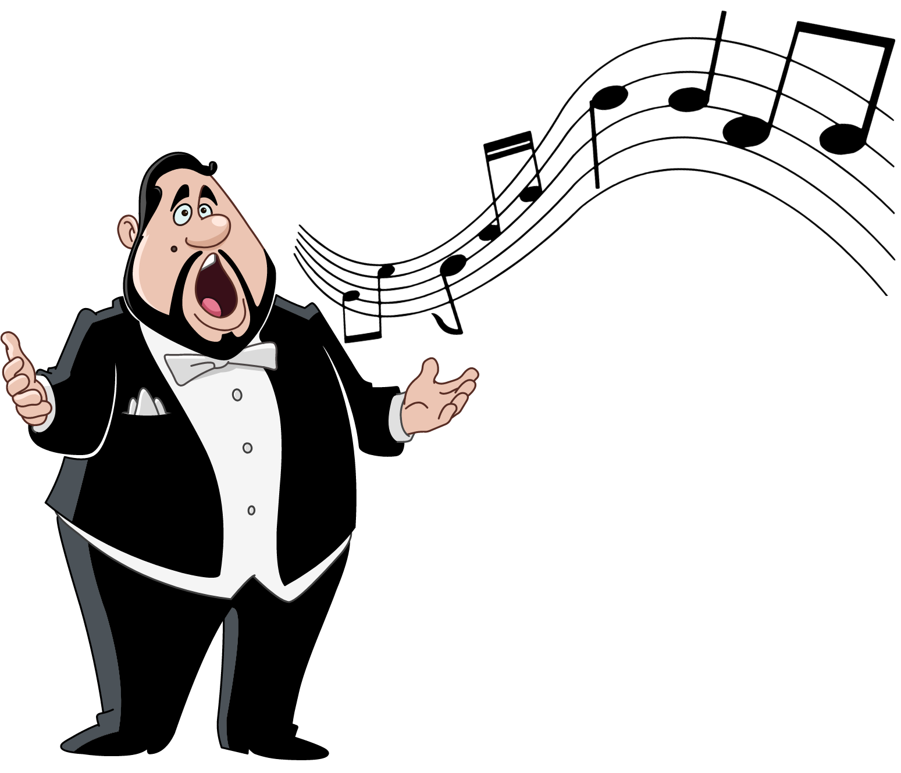
As you sing lower pitches, it will move downward.
Every sound produced by a musical instrument (including the human voice) vibrates at a particular rate, called its “fundamental frequency”. Pitch is how we hear that frequency: the faster the vibration, the higher the pitch. Frequencies can be represented visually as “waves”. An excellent website that you can use to see frequencies visually represented is https://academo.org/demos/wave-interference-beat-frequency.
Although the waves are not moving on that website, try to imagine them going from left to right. “Frequency” is the number of waves that pass by in a second.
Here are two waves. The unit of measurement is called “Hertz” which is abbreviated as “Hz”. The top wave’s frequency is 329.6 Hz. The bottom wave’s frequency is 164.8 Hz (exactly half of 329.6 Hz). Because the 2nd frequency is exactly half of the first, its wavelength is exactly twice as long.
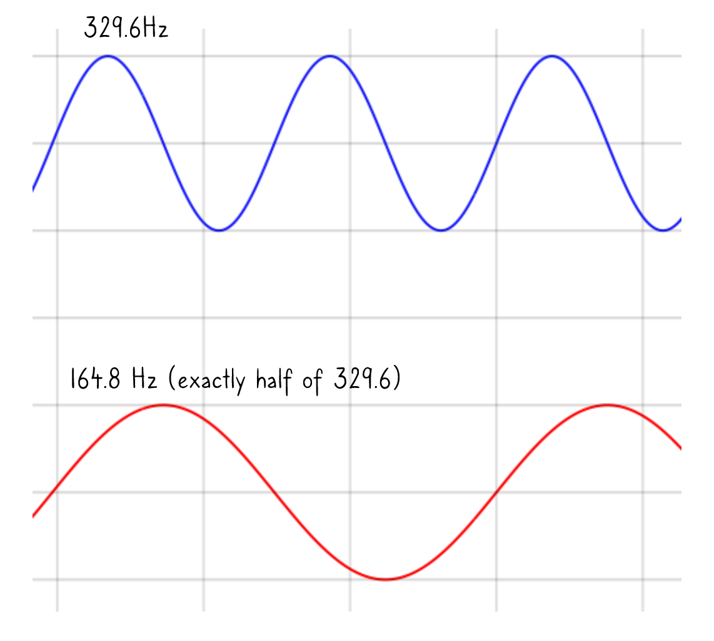
I recommend that you switch on the sound to hear what these frequencies sound like on that website. You’ll notice that a frequency that is exactly twice (or half) as much as the other will sound like it “just fits” with the other frequency.
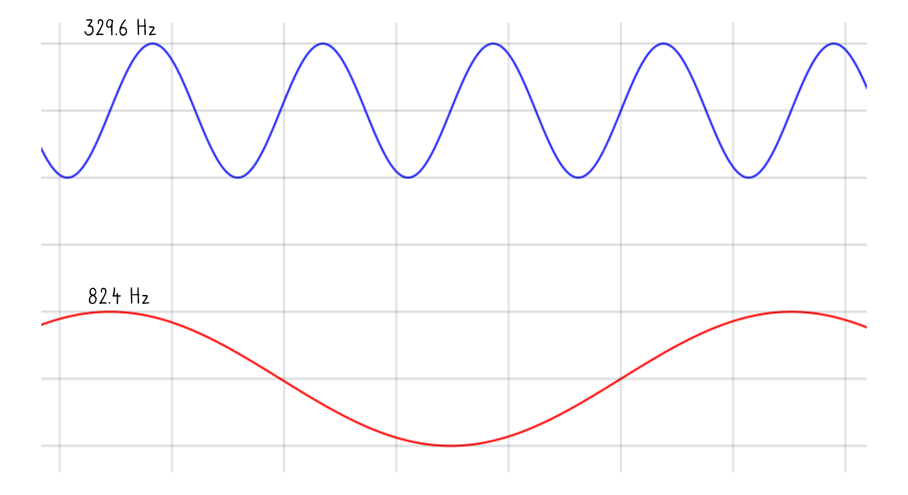
Here is another example of two frequencies that “just fit”. The top frequency is still 329.6 Hz. The bottom one is a one-fourth of that, 82.4 Hz.
These two frequencies sound like they "just fit" as well because the top frequency is a multiple of 2 (4x) of the bottom one.
Guitar application
This particular pair is worth noticing on guitar: 82.4 Hz is the pitch of the thick, low E string, and 329.6 Hz is the pitch of the thin, high E string. They are two octaves apart, so their fundamental frequencies are exact multiples of each other.
Bass application
On a four-string bass, the open E string is about 41.2 Hz. At the 12th fret it produces an E at about 82.4 Hz—exactly twice the frequency. Both pitches are named E; the 12th-fret E is a lighter shade of the open E.
The Fretboard: Going Up and Down The Fretboard
2
On a single string, when you play lower-numbered frets, they are lower in pitch than when you play the higher-numbered frets. For example, when you play the 3rd fret (of any string), it is lower in pitch than the 5th fret (of the same string). The lowest pitch on any string is the open string itself. You can think of it as “fret 0,” the floor that “going up” starts from.
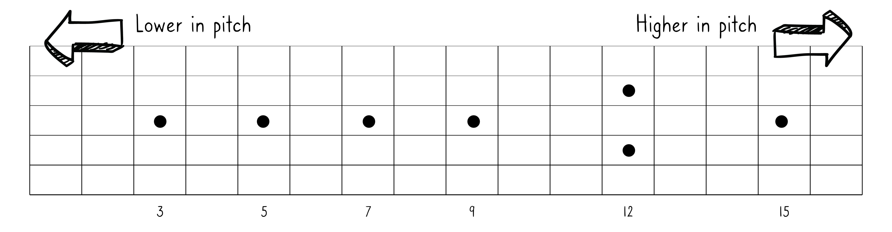
When people say “go UP the fretboard” or “move UP the fretboard”, they mean that you should go UP in pitch and therefore move toward the body of the instrument. Going “down the fretboard” means you play pitches that move toward the headstock.
What about going from string to string?
When going or moving from strings that are closer to your nose towards strings closer to your toes, you are also moving higher in pitch.
Generally, when people say “move to the next string UP” they are referring to pitch and therefore you need to move to the next string down physically on the fretboard. This is also consistent with how tablature works. In tablature, lower-pitched strings are at the bottom and the higher-pitched strings are at the top.
Guitar example
In this simple example below, you play the open 6th string 4 times (in measure 1) then you play the open 5th string 4 times (in measure 2). You, therefore, move UP a string from measure 1 to measure 2.
This example is in tablature.
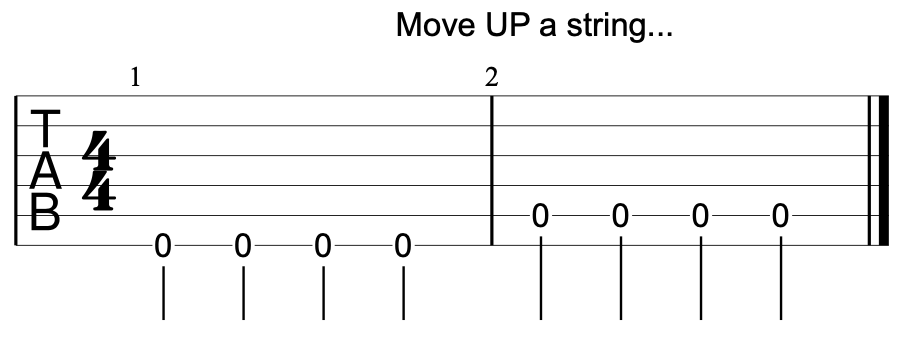
In Standard Notation, sometimes the string number is in a circle to explicitly tell you to go from one string (6th string, low E) to another string (5th string, A).
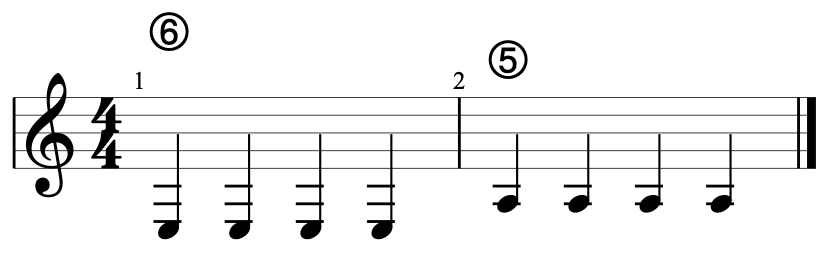
Bass example
Bass tablature normally has four lines. The low E string is the bottom line, and the higher-pitched strings appear above it.
Play the open E string—the 4th string—four times in measure 1. Then play the open A string—the 3rd string—four times in measure 2. You have moved up one string.
Some teachers use “up” and “down” to describe the physical direction their hand moves rather than the change in pitch. That reverses the convention used in tablature. In this book, moving from a lower-pitched string to a higher-pitched string means moving up a string; moving toward a lower-pitched string means moving down.
Music Theory and The Fretboard Student assignment—Pitch
Guitar assignment
Use the online tool at https://academo.org/demos/wave-interference-beat-frequency to display 100Hz and 200Hz. Draw 1 cycle of each below.
Which is higher in pitch? Circle one: “1” or “2”
Which open string is lower in pitch? Circle one: String #3 or String #5
Which piece of notation/tab represents going UP a string from measure 1 to measure 2?
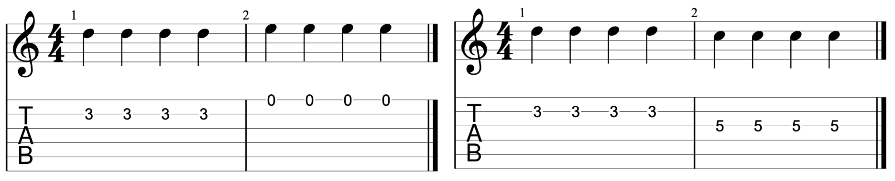
Which piece of notation/tab represents going DOWN a string from measure 1 to measure 2?
Bass assignment
Use the online tool at https://academo.org/demos/wave-interference-beat-frequency to display 100 Hz and 200 Hz. Draw one cycle of each. Which frequency is higher in pitch?
On the D string, which is higher in pitch: fret 3 or fret 5?
Which open bass string is lower in pitch: String 2 (D) or String 4 (E)?
Measure 1 uses the open E string and measure 2 uses the open A string. Did you move up or down a string?
Measure 1 uses the open A string and measure 2 uses the open E string. Did you move up or down a string?
Music Theory: Notes
3
On a fretless instrument, your finger can land anywhere along the string, allowing you to slide through the pitches between two locations. A fretted guitar or bass divides the string into fixed positions. Each fret gives you one specific pitch—one note. Fretless bassists can use those same locations as reference positions.
A note is a named pitch.
Notes are the basic building blocks of music. They’re kind of like colors in a painting. You can use a single color (note) to create part of a painting. Or you can combine colors (ie. notes) to make new colors (chords – multiple notes played at the same time).
One difference between art and music
You don’t really need to know the names of colors to create a beautiful painting. But knowing the names of notes and where they are on your instrument gives you a reliable way to find, describe, and reuse musical ideas.
Guitar application
On guitar, fretboard knowledge and shape knowledge work together when you play, compose, and improvise melodies and songs. Chapter 12 introduces the strategy for memorizing notes on the fretboard.
The 6th string—the low E closest to your nose—produces about 82.4 Hz. The 1st string—the high E closest to your toes—produces about 329.6 Hz. Chapter 1 pictured those frequencies.
Some tuners and tuner apps display a note’s frequency. Try the online tuner at https://tuner.ninja. Your open 1st string should display E at or near 329.6 Hz.
Bass application
On bass, note locations and fretboard shapes work together. In Level 1, memorizing the E, A, and D strings will help you find chord roots quickly. Root–5th–octave patterns then help you turn those roots into bass lines, fills, and melodies. Chapter 12 introduces the memorization method.
The open E string of a four-string bass produces a fundamental frequency of about 41.2 Hz. The open A string produces 55 Hz.
Some tuners and tuner apps display both the note name and its frequency. Try the online tuner at https://tuner.ninja with your open A string: it should display A at or near 55 Hz.
The Fretboard: Names of the Strings (the notes they produce)
4
We could name each pitch by the frequency they produce. For example, “Will you play the 440 Hz note for me so that I can tune my Violin?”
Instead, we’ve given each pitch a name. An open string—a string played without pressing a fret—produces a note, and that note is also the string’s name.
Guitar standard tuning
From nose to toes, the guitar strings are E, A, D, G, B, and E again. This is called “standard tuning” or “E Standard”.
The thinnest string, the high E closest to your toes, is String 1. The thickest string, the low E closest to your nose, is String 6. The complete mapping is E (6), A (5), D (4), G (3), B (2), E (1).
These are the pitches guitarists have agreed to use as a common starting point. Other tunings exist, including Drop D and DADGAD, but this book uses guitar standard tuning.
Bass standard tuning
From nose to toes, the strings of a standard four-string bass are E, A, D, and G. This is also called “standard tuning” or “E Standard”.
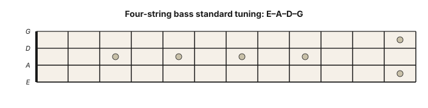
The thinnest string, the G closest to your toes, is String 1. The thickest string, the low E closest to your nose, is String 4. The complete mapping is E (4), A (3), D (2), G (1).
These are the pitches bassists have agreed to use as a common starting point. Other tunings exist, including Drop D, but this book uses four-string bass standard tuning.
Learn all four open-string names now. In Level 1, however, you will memorize fretted note locations only on E, A, and D. The G string may appear as the upper note of an interval shape, but its complete note map begins in Level 2.
Music Theory: Why Note Names Repeat
5
Two different pitches can have the same note name for much the same reason that “dark red” and “light red” are both considered red.
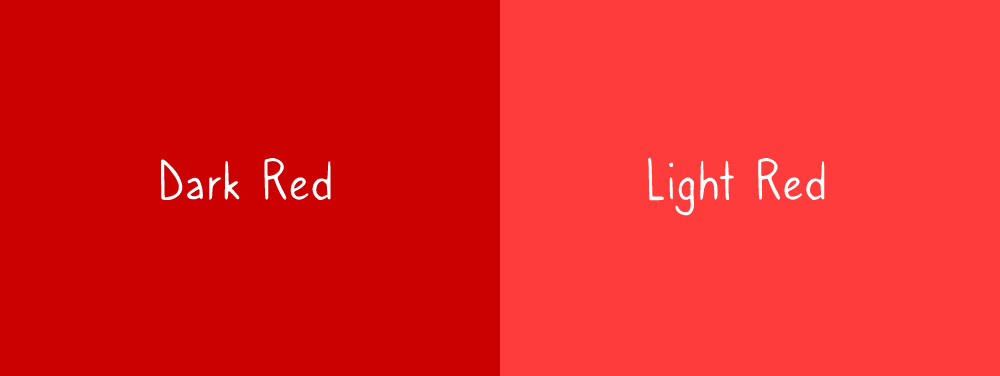
Guitar example
The guitar’s low E string produces about 82.4 Hz, while its high E string produces about 329.6 Hz. Their frequencies are separated by a factor of four: start at 82.4 Hz, double it to 164.8 Hz, then double it again to reach 329.6 Hz.
Those two doublings are why the low E sounds like a darker shade and the high E sounds like a lighter shade of the same note. They are different pitches, but both are named E.
Bass example
On a standard four-string bass, the open E string produces about 41.2 Hz. The E at the 12th fret produces about 82.4 Hz—exactly twice the frequency.
That doubling is why the open E sounds like a darker shade and the 12th-fret E sounds like a lighter shade of the same note. They are different pitches, but both are named E.
Remember how doubled frequencies sounded as though they “just fit” back in Chapter 1? Your ears hear every doubling as another version of the same note. This distance is called an octave, and the note name repeats at every octave.
Guitars and basses usually have fretboard dots, also called dot inlays, that help you see where a note name returns in a lighter shade.
The Fretboard: 12 Notes on a Single String and The Fret Markers
6
The fret markers (ie. dot inlays) or side dots help indicate when notes repeat. For example, the 12th fret of the low E string sounds like it “just fits” when played along with the open low E string (you play the 12th fret on the low E string and a friend plays the low E string unfretted). Therefore, the notes at the 12th fret get the same name as the open string. The 12th fret is usually marked with two dots. It’s like the fretboard starts again at the 12th fret but now everything is a “lighter shade” of the same notes.
This is also where the title of this chapter comes from. How many different notes are there on a single string before the names start repeating? Twelve. Here’s the part that trips people up: count the open string as your first note, the 1st fret as your second note, the 2nd fret as your third, and so on. By the time you reach the 12th fret you’ve played 13 notes but only 12 of them have different names. That 13th note, at the 12th fret, is where the open string’s name comes back as a “lighter shade”.
That’s “12 notes on a single string”, and it’s why the double dots land on the 12th fret.
This also helps explain the other fret markers. On many guitars and basses, the 3rd fret has a dot. Compare that note with the note exactly 12 frets higher, at the 15th fret. Do you notice how the 3rd-fret note sounds like a darker shade of the 15th-fret note?
Guitar examples
The open E String and the 12th fret of the same string have the same name because they are 12 frets apart.
The 3rd fret of the A string and the 15th fret of the A string have the same note name because they are 12 frets apart. Even though you don’t know the name of this note just yet, listen closely to how the note on the 15th fret sounds like a “lighter shade” of the note at the 3rd fret.
The 2nd fret of the D string and the 14th fret of the D string have the same note name because they are 12 frets apart. The note at the 14th fret is a “lighter shade” of the note at the 2nd fret.
The 1st fret of the B string and the 13th fret of the B string have the same note name because they are 12 frets apart. The note at the 13th fret is a “lighter shade” of the note at the 1st fret.
Bass examples—E, A, and D
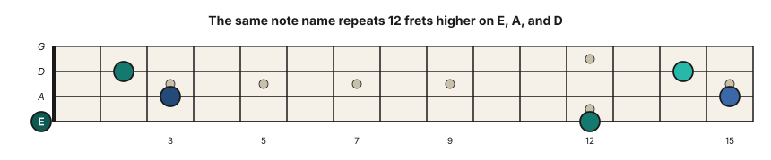
The open E string and the 12th fret of the E string have the same note name.
The 3rd fret of the A string and the 15th fret of the A string have the same note name.
The 2nd fret of the D string and the 14th fret of the D string have the same note name.
The G string is shown because it is part of the bass, but Level 1 does not ask you to memorize its fret-by-fret note locations.
So where do all these dots live? On most guitars and basses, you’ll find single dots at the 3rd, 5th, 7th, and 9th frets, and double dots at the 12th fret. (The same pattern repeats higher up and that’s why there’s a dot at the 15th fret in the examples above.) Their job is simple: they let you find your place on the neck at a glance, so you don’t have to count up fret-by-fret from the bottom every time.
Guitar assignment
MUSIC THEORY AND THE FRETBOARD STUDENT ASSIGNMENT—Open String Names and Fretboard Logic
From low to high (nose to toes), list the names of the 6 open strings: ___, ___, ___, ___, ___, ___.
If you play the 3rd fret of the 2nd string, which fret (on the same string) do you need to play in order to play the “lighter shade” of that same note? (Mark your answer on the fretboard.)
If you play the 13th fret of the 3rd string, which fret (on the same string) do you need to play in order to play the “darker shade” of that same note? (Mark your answer on the fretboard.)
If the name of the note that is produced by the 6th string is “E”, then what is the name of the note at the 12th fret on the same string? _______
Take the 6 string names and put them in alphabetical order (but don’t put E twice): ___, ___, ___, ___, ___.
Bass assignment
MUSIC THEORY AND THE FRETBOARD STUDENT ASSIGNMENT—Open String Names and Fretboard Logic
From low to high (nose to toes), list the four open strings of a standard bass: ___, ___, ___, ___.
If you play the 3rd fret of the A string, which fret on the same string produces the “lighter shade” of that note? _______
If you play the 14th fret of the D string, which fret on the same string produces the “darker shade” of that note? _______
If the open E string is named E, what is the note at its 12th fret? _______
Which three strings’ fretted note locations will you memorize in Level 1? ___, ___, ___.
Rhythm: The Beat, Measures, and Note Durations
7
Alongside pitch and notes, there is a third basic idea every musician needs: rhythm—when the notes happen and how long they last. You already feel rhythm in your body whenever you tap your foot to a song. These next two chapters give names to what your foot is doing. (We will use rhythm constantly once we start playing fretboard patterns and scales later in the book.)
The beat = the pulse of the song
The beat is the steady, even pulse you naturally tap your foot to. Watch your foot: it goes down, then up, then down, then up—a simple, repeating motion. That down-and-up of the foot is going to help us count every rhythm in these chapters, so get comfortable with it now.
The quarter note = one beat
In music we have a way to write down just one beat, and it is called the quarter note. A quarter note lasts exactly one beat. Every quarter note has two parts: the note head (the circle) and the stem (the line coming off it).
In standard notation a quarter note is a filled-in note head with a stem. In guitar or bass tablature, instead of a note head we write the fret number, and a stem comes down from it to show the rhythm. (If you use a program like Songsterr, a quarter note shows up as a fret number with a short line extending down from it.)
If you write eight quarter notes in a row, you count them out loud as you tap: “1, 2, 3, 4, 5, 6, 7, 8.” Try it—put on a simple drum beat, and tap your foot once on every quarter note.
Then choose the open E, A, or D string and play one note on each tap. Use whichever plucking or picking technique is comfortable; concentrate on making every note last exactly one beat.
Measures and bar lines
Counting “1, 2, 3, 4, 5, 6, 7, 8…” gets unwieldy fast, so we organize music into small chunks. We draw a vertical line through the staff called a bar line. The space between two bar lines is called a measure (also called a bar).
Here is the important part: when you reach a bar line, you do not keep counting upward. You start over at “1.” So eight quarter notes split into two measures are counted “1, 2, 3, 4 … 1, 2, 3, 4” instead of “1…8.” A double bar line at the very end tells you the music has finished. In tab, measures are usually numbered (1, 2, 3, 4…) so you can keep track of where you are.
The time signature
At the very start of a piece you will see two numbers stacked on top of each other. This is the time signature, and it tells you how the song’s rhythm is organized.
The top number tells you how many beats are in each measure. A 4 on top means four beats per measure; a 3 on top means three beats per measure; a 5 would mean five.
The bottom number tells you what kind of note gets one beat. Here is a trick: read the time signature as if it were a fraction. The signature 4/4 reads as “four-fourths.” Another word for a “fourth” is a quarter—so the bottom 4 is telling you the quarter note gets one beat. Put it together and 4/4 means: four beats in each measure, and the quarter note gets the beat. This is the most common time signature in popular music.
The half note = two beats
Now let’s build longer notes. If you combine two quarter notes into a single note, how many beats is it? Two (1 + 1 = 2). That new note is the half note. Its note head is empty (not filled in) and it has a stem. You count it across its full length: “1–2” or “3–4.” In tab, a half note often appears as a fret number inside a small circle with a half-length stem.
The whole note = four beats
Combine two half notes and you get the whole note: four beats long. It is drawn as just a circle with no stem. In 4/4 time a whole note “takes up the whole measure”—you play it once and let it ring for all four beats while your foot keeps tapping “1, 2, 3, 4.”
That is the core toolkit: the beat, the quarter note (1 beat), the half note (2 beats), and the whole note (4 beats), all organized into measures by a time signature. In the next chapter we add silence, faster notes, and a couple of ways to stretch a note’s value.
Rhythm: Rests, Eighth Notes, Ties, and Dots
8
Music is not only sound—it is also silence placed exactly in time. In this chapter we add rests (silence), eighth notes (faster notes), and two tools—ties and dots—for lengthening a note.
Rests = the sound of silence
A quarter note is one beat of sound. The opposite of sound is silence, and a rest is the symbol that tells you not to play—while the beat keeps right on going. Each note value has a matching rest:
The quarter rest = one beat of silence.
The half rest = two beats of silence. It looks like a small rectangle.
The whole rest = four beats of silence. It is the same rectangle shape as the half rest.
Because the half rest and whole rest look alike, use this visual mnemonic: the half rest sits on top of a line like a hat, while the whole rest hangs below a line. If you clap four quarter notes but the third beat is a quarter rest, you simply make no sound on beat 3—“1, 2, (rest), 4”—while your foot never stops tapping.
Guitar: make the rest silent
Choose an open E, A, or D string. Play on beats 1, 2, and 4, and stop the string from ringing on beat 3. The rest begins when the sound stops—not merely when you skip a new attack.
Bass: actively mute the rest
Choose an open E, A, or D string. Play on beats 1, 2, and 4, and actively mute the string with either hand on beat 3. A low bass note can keep ringing through the rest, so skipping the next pluck is not enough.
The eighth note = half a beat
To make a faster note, we split the quarter note in half. Since a quarter note is one beat, half of it is half a beat—so two eighth notes fit inside a single beat. Eighth notes have a flag, and when you write several in a row they are joined by a beam.
This is where the down-and-up of your foot pays off. Count eighth notes as “1 and 2 and 3 and 4 and.” The number happens when your foot is down; the “and” happens when your foot is up. So a full measure of eighth notes is: down-up, down-up, down-up, down-up, counted “1-and-2-and-3-and-4-and.”
There is also an eighth rest—half a beat of silence—which looks like a small flag on a short stem (a little like the letter “y”). If the last half-beat of a measure is an eighth rest, you still count the “and,” you just don’t play it. We often write that silent count in parentheses, like “…4 (and).”
Ties = connecting two notes
A tie is a curved line that connects two notes of the same pitch. You play the first note and hold it through the value of both—you do not play the second note again. For example, tying two quarter notes together gives you exactly the same sound as one half note. When counting, a tie is often shown with a hyphen, like “1–2.” Sometimes a songwriter writes a half note and sometimes two tied quarter notes—they can mean the same length; it just depends on the song.
Dots = add half the value
A dot placed after a note adds half of that note’s value. Think of it with plain numbers: dot a 4 and you add half of 4 (which is 2) to get 6; dot a 10 and you add 5 to get 15; dot an 80 and you add 40 to get 120.
Now apply that to notes. A half note is 2 beats; a dotted half note adds half of 2 (one beat) for a total of 3 beats—very handy in 3/4 time, where it fills a whole measure.
A dotted quarter note is a quarter note (1 beat) plus half its value (an eighth note, half a beat), for one-and-a-half beats. It creates the rhythm counted “1, 2-and, 3, 4,” where the held note absorbs the next half-beat. In fact, a dotted quarter note sounds identical to a quarter note tied to an eighth note—the dot is just a tidier way to write the same idea.
That is Level 1 rhythm. With the beat, measures, time signatures, the note values (whole, half, quarter, eighth) and their rests, plus ties and dots, you can read and count the rhythms behind the vast majority of popular songs—and, just as importantly, write down your own.
Level 1
II
Level 1 focuses on the bass-side of the instrument: the E, A, and D strings. You will begin your fretboard mastery by memorizing the notes on these 3 strings. We will also learn about chord progressions, the theory behind Power Chords, chord symbols, and some basic scales.
Music Theory: The Major Scale creates a palette of 7 colors (notes)
9
If notes repeat every 12 frets, then that means there are only 12 notes in total. You don’t have to know the names of the notes just yet to understand this concept because you can hear it. Play each fret on any string (but stay on that string). Start with the first fret. Here is an example on the high E string:
As you play each fret, count the fret 1, 2, 3…..10, 11, 12… and once you reach fret 13, the sound produced is the lighter shade of “1”. By the way, the open string is considered fret 0.
So, we have 12 notes in total. But how can we use this to make music?
Over the course of history, we have discovered a way to create a “palette” of notes to choose from in order to create songs. When you “paint” with this palette to create a melody or a song, it will sound great! In total, we will pick just 7 notes (colors).
You already know what this palette sounds like, even if you’ve never thought about it as “music theory”. It’s “Do Re Mi Fa So La Ti Do”. The pattern they teach you in kindergarten. The 7 notes (colors) we pick are exactly those: Do, Re, Mi, Fa, So, La, Ti, and then Do again (the “lighter shade” of the first one). So as you number the palette 1, 2, 3, 4, 5, 6, 7, you can also sing Do, Re, Mi, Fa, So, La, Ti.
The first step for creating this palette is choosing the “tonic” note or “key-note”. This is the note the whole palette is built around. It's the “home base” that a melody feels like it wants to settle back onto (it’s also the “Do” in “Do Re Mi”). Any note will do. For example, you could simply choose E as played by the low E string (or high E string). After you choose this note, you must follow this “interval sequence” to create your musical palette.
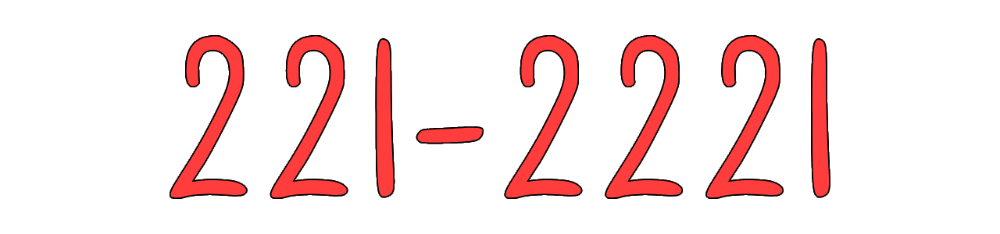
An interval is the measurement of distance between any two notes. These numbers represent the number of frets that you must move to find the next note for your palette. The 221-2221 interval sequence easy to remember because it looks like a phone number!
We’ll first think theoretically (away from the fretboard). After picking your first note, move up 2 of the 12 notes and use that note as the 2nd note in the palette. Next, move up another 2 (of the 12), then use that note as the 3rd note of the palette. And so on. I will also number each note as I go.
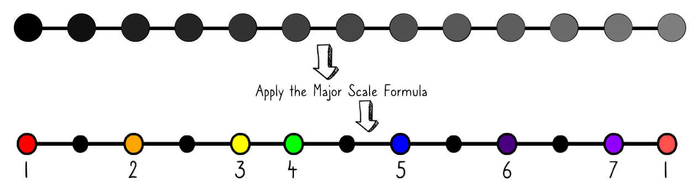
The rainbow-colored notes are what make up the “Major Scale”. The 221-2221 interval sequence can also be considered the “Major Scale Formula”. The black dots (in between the rainbow-colored dots) are still notes but they are not part of our “palette”. Again, the actual musical term for this “palette” is The Major Scale.
Notice that we could have started on any of the 12 notes. That means there are 12 different Major Scales (one starting on each note) but every single one of them is built with the same 221-2221 formula.
The Half Step Interval
When you move from one note to the next (or one fret to the next), you are performing what is called a “half step”. There is a half step between ANY note and the very next note.
But in the Major Scale specifically, there is only a half step between notes 3 to 4 and between notes 7 and the “lighter shade” 1. Half steps just naturally occur from 3–4 and from 7–1. In the 221-2221 sequence, the “1” represents a half step (“H”).
The Whole Step Interval
A whole step is 2 half steps.
Here are the whole steps in the Major Scale (there are 5):
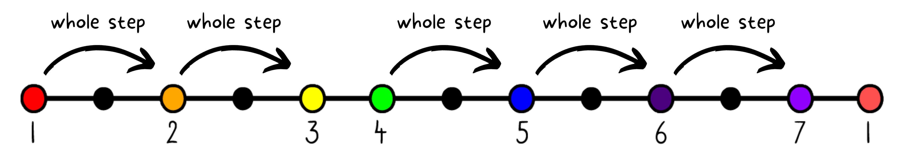
In the 221-2221 sequence, the “2” represents a whole step (“W”).
221-2221 or WWH-WWWH
Another common way to describe the Major Scale formula is to use a series of W’s and H’s (whole steps and half steps). 2 = a whole step. 1 = a half step. Therefore 221-2221 becomes WWH-WWWH. You may have already seen this in several online sources. If you use W’s and H’s, I think it’s a little easier to memorize if you separate it out like this WWH – W – WWH. Now you can see there are two “WWH” chunks and they are connecting with a single “W”.
The Fretboard: The Major Scale on a single string
10
Try playing the Major Scale on a single string. Here it is on the low E string. Notice how it follows the 221-2221 pattern? When you arrive at the 12th fret, it’s a lighter shade of red, not a totally new color.
On a single string, the formula is just fret-counting. Starting on the open string, move up 2 frets, then 2 more, then 1, then 2, 2, 2, and a final 1. That last step lands you on the 12th fret (the double-dot fret) which is why the 8th note is the “lighter shade” of the note you started on.
Why learn it on one string? Because it lays the whole scale out in a straight line, so you can see and hear the 221-2221 pattern without your hand jumping around between strings. It’s a great way to learn the pattern but it’s not really how you’ll usually play it. Hopping up and down a single string for a whole song would be clumsy. Later, we’ll spread the scale across several strings to make it easier to play. For now, one string keeps things nice and clear.
Try a different starting note (a different tonic note). It can be anywhere! Here are 3 more examples.
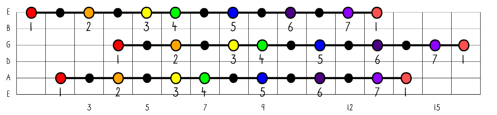
The important thing is that you can hear the unique sound of the Major Scale no matter where you start on the guitar.
This works because the Major Scale is a movable pattern. The fret-distances (221-2221) stay the same no matter where you begin, so the same shape gives you a Major Scale anywhere on the neck.
As you play up the string, sing along: Do, Re, Mi, Fa, So, La, Ti, Do. Hearing those syllables while your fingers find the notes is the start of training your ear...something we’ll come back to later.
Music Theory: The C Major Scale
11
Let’s name some notes. The first Major scale to learn is the C Major scale. We use letters of the alphabet to name notes. And since there are only 7 notes in a Major scale, we are only going to use 7 letters. However, the first letter in the musical alphabet is C (I'll explain why later). So the 7 letters we use to name notes in music are C, D, E, F, G, A, and B. As you can see, when we get to G, we loop back to A.
When writing or playing scales, we like to play the tonic (the first note of the scale) again to provide a sense of completeness. Therefore, the C Major scale would be played as C–D–E–F–G–A–B–C. That last C is the same note as the first C, just a “lighter shade” of it (it’s where the names start over again).
Remember that the generic Major Scale pattern (in theory) looks like this. The numbered notes are called “scale degrees”. In college-level textbooks, they will have a caret above each number: 1̂, 2̂, 3̂, etc.
Again, there will always be a half step between the 3rd note and the 4th note of the scale. Notice how “3” and “4” are right next to each other? Additionally, there is a half step when going from the 7th note of the scale to the 1st note (at a “lighter shade”) again.
With that in mind, when we apply the names to the notes (starting with C)…
…half steps between E–F and B–C just naturally occur. Remember that important fact. Half steps naturally occur between the E–F notes and the B–C notes.
Key of C
These palette of notes are what make up the “Key of C”. The note “C” is the tonic of the C Major scale and the key-note of the Key of C. (Elson’s Pocket Music Dictionary, p. 149)
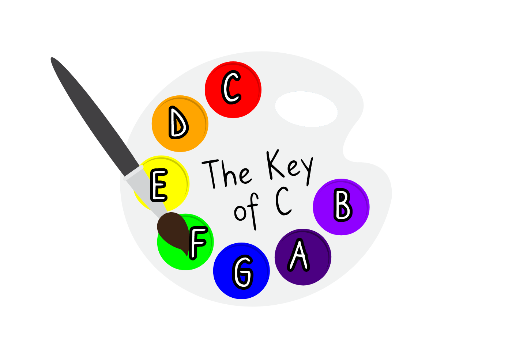
The Fretboard: Memorizing Note Locations on the E, A, D Strings
12
The C Major Scale on One String
In this piece of music, I include the scale degrees (the numbers with the carets above them) in between the standard notation and the tab. It’s acceptable to call the last scale degree in the scale 8̂ or 1̂.
Building The Fretboard
In music, notes in a scale continue on in both directions beyond both C’s. So we’re going to take the scale…
…and just extend it just a little bit.
Now I can see E to E. So I’m going to take this string of notes and create the strings on the guitar like so:
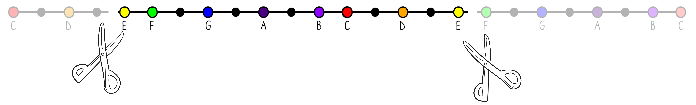
Now I’ll place that down as my 6th string. Like so…
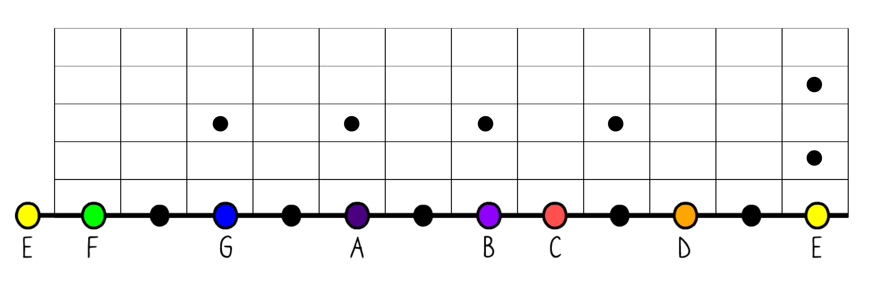
Next, I’ll cut out an A string:
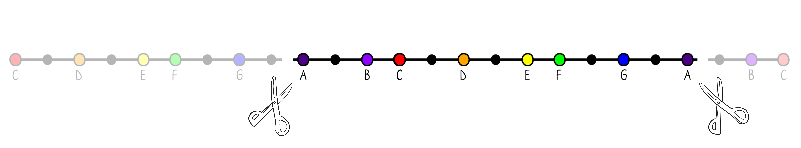
And a D string:
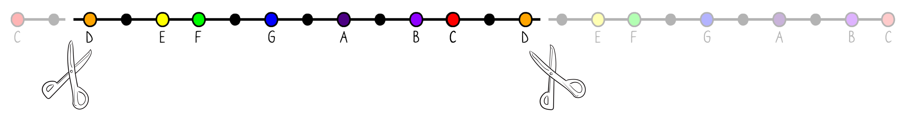
I’ll create an A string and a D string as well and altogether it will look like this:
Here are the names of the notes without the colors:
The first step to becoming an intermediate-advanced player is memorizing the note locations on the fretboard.
It seems like a daunting task, I know. But there is a specific strategy that has a 100% success rate. Just do one note at a time.
On your guitar, play the 8th fret (of the low E string) and say/think “C”. Then play the 3rd fret (of the A string) and say/think “C”. Finally, play the 10th fret (of the D string) and say/think “C”. Then go back down to the 3rd fret (of the A string) and start over.
As you hunt for these notes, let the fret markers (the dots) guide your eye instead of counting up from the nut every time. The 3rd fret sits right on a dot, the 8th fret is just past the 7th-fret dot, and the 10th fret is just past the 9th-fret dot. That’s exactly what the dots are for: finding your place quickly.
There are a few reasons why you should learn the bass strings (E, A, D). First, it’s only half of the fretboard and therefore is not as overwhelming as tackling the entire thing. Second, it’s very useful because many guitarists are quite familiar with Power Chord and Barre Chord shapes. Those shapes are built starting from a note on a bass string, and that note is what gives the chord its name. So if you memorize the notes on these strings, you’ll instantly know the name of every chord you play with those shapes.
Here’s one more reason it’s less work than it looks: you only have to learn the first 12 frets. Remember that at the 12th fret, the notes start over as a “lighter shade” of the open string. So once you know a string from its open note up to the 12th fret, you already know the rest of that string. It just repeats. Three strings, twelve frets each, and then it all comes back around.
Guitar Fretboard Mastery by Chris Paul
Chris Paul (co-author of this book) put together a complete memorization guide for mastering the fretboard. You can read the ebook for free at https://slcpl.pressbooks.pub/guitarfretboardmastery. If you wish to support his work, you can buy a copy of the ebook on Amazon.
How to keep track of your note memorization progress
(Quick definitions, in case these are new: a whole note is held for four beats, a half note for two beats, and a quarter note for one beat. We cover rhythm in detail in the Standard Notation section.)
On the next page is a Progress Tracker. In the “Topic” column, write in the specific goal that you are working on. For example, “Notes: C and D. Play as whole notes.” Then under the BPM column, mark the date at which you can successfully play the topic. If you can play all C’s and all D’s (as whole notes) at 50 BPM, then that is where you mark the current date.
Remember that note length and tempo work together: the same actual duration can be written as a longer note at a faster tempo or a shorter note at a slower one. For example, a whole note at 100 BPM lasts exactly as long as a half note at 50 BPM, and a half note at 100 BPM lasts as long as a quarter note at 50 BPM. So as you get faster, you can track the same progress using shorter note values—working from whole notes toward quarter notes.
I recommend that your end goal should be to play all 7 natural notes (as quarter notes) at 80 BPM without any errors.
Music Theory: Intro to Intervals
13
An interval is the measurement of distance between any two named notes. They are calculated by counting the lowest note as 1. Before calculating intervals, I’m going to first re-arrange the C Major Scale graphic to look more like a piano.
From…
to…
The 2nd Interval
A “2nd” interval is an interval that spans 2 note names. For example, C–D is a 2nd interval. C (1) and D (2).
Simply count just the named notes in the circle:

C–D is also an example of a whole step. Notice that you skip over the unnamed black note in between C and D. E–F is also a 2nd because it spans two names.
Again, simply count just the named notes in the circle:

E–F is also an example of a half step.
To figure out an interval just start counting from 1 and only count the letters. Counting intervals is foundational for when we get to creating power chords (and other types of chords).
The 3rd Interval
A 3rd is an interval that spans 3 note names. For example, D–F is a 3rd interval because 3 notes in the scale are spanned: D (1), E (2), and F (3).
Simply count just the named notes in the circle:

G–B

G–B is a 3rd because it spans 3 notes in the scale: G (1), A (2), and B (3).
B–D is a 3rd
To count from B to D, wrap around to the beginning of the scale after you have reached C but don’t count C twice. B (1), C (2), D (3).
[put image here: the C major note circle showing the count wrapping past C, highlighting B (1), C (2), D (3) for the B–D 3rd]
The 4th Interval
A 4th is an interval that spans 4 note names. For example, E–A is a 4th because it spans 4 notes in the scale: E (1), F (2), G (3), and A (4).

You count all intervals in the same manner...5ths, 6ths, 7ths, and 8ths. Start counting from 1 and just count the letter names until you have reached the higher note.
[put image here: a circle diagram of one larger interval as an example, e.g., C–G counted C (1), D (2), E (3), F (4), G (5) to show a 5th]
The 1st Interval
The "1st interval" is also called the unison interval because there is only one note name involved. In other words, it’s the same note. On the guitar, you can utilize the unison interval to help you tune your guitar. For example, when you play the 5th fret of the E string, it produces the note A. This note A should be "in unison" with the open A string. In this case, A–A is a unison interval because you only span 1 note name.
[put image here: a fretboard diagram showing the 5th fret of the low E string and the open A string are the same note (A–A unison), as used for tuning]
The 8th Interval
The "8th interval" is also called the octave. The word “octave” comes from “oct”, meaning eight (think of an octopus and its eight legs). This is the same thing we’ve been calling the “lighter shade” of a note all along. So C–C′ (pronounced C to C prime) is an octave interval where C′ is the lighter shade of C (the note an octave lower).
[put image here: a diagram showing C and C′ an octave (8 note names) apart, labeling it the 8th]
Scale Degrees vs. Intervals
You may have noticed something. Back when we learned scale degrees, C was 1, D was 2, E was 3, and so on. Now that we’re counting intervals starting from C, we get the same numbers: C–D is a 2nd, C–E is a 3rd, C–F is a 4th. So a lot of beginning guitarists (I see this all over the guitar forums on Reddit) assume that scale degrees and intervals are the same thing. They are not.
Here’s the difference. A scale degree is a note’s fixed address inside a key. In the key of C, E is always the 3rd degree, period. It doesn’t matter what other note you happen to play it with. An interval, on the other hand, is relative. It’s the distance between any two notes, and you can measure it starting from any note you want, not just the tonic.
The numbers only line up when you happen to count from the tonic. Step off the tonic and they come apart. Take D and F. As scale degrees in the key of C, those are 2 and 4. But as an interval, D–F is a 3rd (D, E, F). The interval doesn’t care that D is the 2nd degree. It just measures the distance from D up to F. In fact, a 3rd can be built off of any note: C–E, D–F, E–G, and so on. They are all 3rds.
[put image here: a contrast diagram with fixed scale degrees on top (C=1, D=2, E=3 ... B=7, anchored to the tonic C) and a movable 3rd shape below shown sliding across C–E, then D–F, then E–G, to show intervals move while scale degrees stay put]
So here is the takeaway: scale degrees are fixed (they are always counted from the tonic), while intervals are movable (they can be measured between any two notes). They happen to match only when you start counting from the tonic, and that coincidence is exactly what trips people up.
MUSIC THEORY AND THE FRETBOARD STUDENT ASSIGNMENT—Calculating Intervals
For the following questions, you should answer with “2nd”, “3rd”, “4th”, etc. Utilize the scale and remember not to count C twice.
What is the interval A–C? __________
What is the interval A–D? __________
What is the interval D–A? __________
What is the interval B–E? __________
What is the interval G–B? __________
What is the interval D–G? __________
What is the interval G–D? __________
What is the interval D–B? __________
What is the interval G–F? __________
What is the interval F–E? __________
For the following questions, provide the note that completes the interval.
What note is a 3rd from C? ________
What note is a 5th from C? ________
What note is a 4th from E? ________
What note is a 6th from E? ________
What note is a 7th from G? ________
What note is a 6th from G? ________
What note is a 6th from B? ________
What note is a 7th from B? ________
What note is a 7th from D? ________
What note is a 3rd from D? ________
Music Theory and The Fretboard: The Harmonic (Overtone) Series
14
What is so fascinating about intervals is that they occur in nature!
Introduction to The harmonic (overtone) Series
Scientists and music theorists like Pythagoras (6th century BCE) used tools like the “monochord” to discover that certain intervals occur in nature. The monochord is like a single-string guitar with a moveable bridge that allows you to significantly reduce the length of the string. When you pluck a full length string and then pluck a second string that is exactly half in length of the first, the interval created between the two strings is an octave. They discovered that if you continue shortening the string in length (a third, a fourth, etc. of the original), each string creates a tone that is consonant to the previously played strings.
The very first tone produced by a full length string has a name: “the fundamental” or “first partial”. The second tone produced by a string half in length is called the “second partial” or “first overtone”. The third tone is called the “third partial” or “second overtone”. Relative to the second partial (or first overtone), it is up a 5th interval. The fourth partial produces a tone that is up a perfect 4th from the previous partial (the second overtone).
playing The overtone Series on the guitar
Here is how you play the first 3 overtones of the Harmonic Series.
The open E string is the fundamental (or 1st partial).
The harmonic at the 12th fret is the 1st overtone (or 2nd partial). It is up an octave (an 8th) interval and therefore it is the note E.
The harmonic at the 7th fret is the 2nd overtone (or 3rd partial). It is up a fifth interval relative to the previous note and therefore it is the note B.
And the harmonic at the 5th fret is the 3rd overtone (or 4th partial). It is up a fourth interval relative to the previous note and therefore it is the note E.
To play natural harmonics, lightly touch the low E string without fretting the string and pluck relatively forcefully for a full sound. You’ll play harmonics on the 12th, 7th, and 5th frets.
You may also have inadvertently discovered the overtone series when tuning your guitar. Other strings will sympathetically vibrate when you pluck the low E string. Sometimes your tuner will jump around and display notes other than “E”. These other mysterious notes are simply the tones from the harmonic series (overtone series). You can help your tuner out by muting the other strings with your free hand.
Music Theory: The Perfect Intervals
15
Each interval has 2 attributes:
Quantity. This is the number of note names the interval spans. This is what we covered in detail in Chapter 13, “Intro To Intervals.”
Quality. Quality describes the number of half steps traversed from the lower note to the higher note in the interval. The term that represents this number will come before the interval name. For example, “Perfect 4th”. “Perfect” represents the quality of the 4th interval. There are five different interval qualities: Major, Minor, Augmented, Diminished, and Perfect. In this book, we are only focusing on the perfect interval quality because it will help us understand Power Chords (chapter 16).
There are 4 intervals in the “Perfect” family: Unisons, 4ths, 5ths, and 8ths (also called the octave).
Why are these four called “perfect”? Think back to the overtone series from the last chapter. The very first tones nature stacks above a fundamental are the octave, then the 5th, then the 4th. Because these intervals come straight out of the harmonic series, they sound especially pure and stable to our ears, and that stability is what earned them the name “perfect”. (The unison counts too. It’s literally the same note, which is about as stable as you can get.)
The Perfect Unison Interval
In theory, the Unison interval might be a little more complicated than it is in the real world. This interval is the same note. For example, when you and a friend both play the E string, you are playing “in unison”. The distance from E to E is 0 (no half steps traversed) and only 1 note name is counted (just E). Therefore the interval is a called a Perfect Unison. The shorthand for this interval is P1.
The Perfect 4th Interval
A 4th interval is perfect if you traverse 5 half steps. For example, the interval from G to C is a 4th because it spans 4 note names. G (1), A (2), B (3), and C (4). Its quality is Perfect because you traverse 5 half steps. Therefore G–C is a Perfect 4th. The shorthand for this interval is P4.
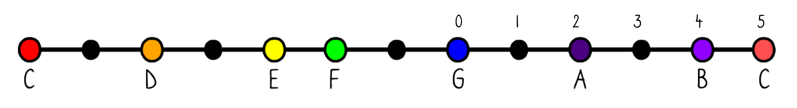
The Perfect 5th Interval
A 5th interval is perfect if you traverse 7 half steps. For example, C to G is a Perfect 5th. The shorthand for this interval is P5.
The Perfect 8th Interval
And finally an octave interval (an 8th) is perfect if you traverse 12 half steps. For example, from the low C to the high C is an octave (or Perfect 8th). The shorthand for this interval is P8. As you know, this interval is also called the octave.
Interval Practice Worksheet
With this practice worksheet, you’ll work on counting intervals with the aid of the fretboard. There are two ways to count intervals because there are two attributes for an interval: quantity and quality. When counting half steps traversed (an interval’s quality), pretend you are playing a board game and start counting when you start moving. In other words, don’t count the “space” you’re on. If you do include the space, you need to remember to start counting from 0. When counting notes spanned (an interval’s quantity), just count the notes. In other words, start counting from 1.
Questions 1 and 4 are done for you.
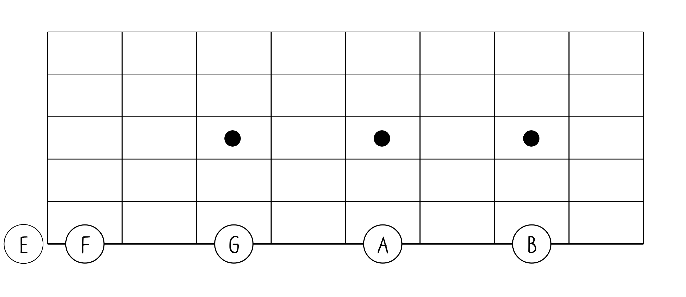
For the above fretboard, answer the following questions:
Count the half steps (frets) traversed from E to B. _____7__________
Count the half steps (frets) traversed from E to A. ________________
Count the note names spanned in the interval E–B. _______
Count the note names spanned in the interval E–A. ___4___
For the above fretboard, answer the following questions:
5. Count the half steps traversed from A to E. ________________
6. Count the half steps traversed from A to D. ________________
7. Count the note names spanned in the interval A–E. _______
8. Count the note names spanned in the interval A–D. _______
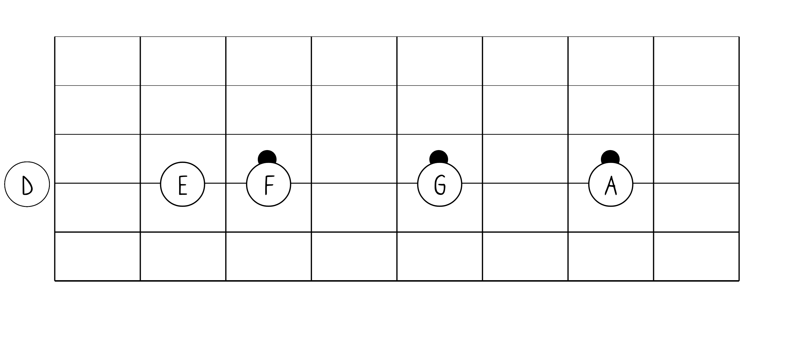
For the above fretboard, answer the following questions:
9. Count the half steps traversed from D to A. ________________
10. Count the half steps traversed from D to G. ________________
11. Count the note names spanned in the interval D–A. _______
12. Count the note names spanned in the interval D–G. _______
The Fretboard: Perfect 4ths, 5ths, and Octave Shapes
16
A chord is usually made up of 3 or more notes. But in the guitar/rock world, there is a chord called the Power Chord which is only 2 notes.
You’ll often hear that “chords come from scales”. And that’s a useful shortcut: the Major scale is a convenient place to find the notes that make up a chord (ie. the chord tones). But strictly speaking, a chord is built from intervals, not from a scale. The power chord comes from a single interval: the perfect 5th. And because a chord is built from a root with intervals stacked on it, you can start on any note, not just the first note of a scale. In other words, every note in the scale can be a root note for a chord. The root note is the note a chord is built on, and it’s the note the chord takes its name from. (A power chord built on C is a C power chord.)
Here is the shape to play a Perfect 5th (a Power Chord) on the 3 bass strings. You should use fingers 1 and 3 for this shape. You may need to utilize a guitar strap so that your wrist is in a good position to make the shape.
These power-chord shapes are movable. The shape is just an interval relationship (a root and its perfect 5th), so you can slide it anywhere along these bass strings. Wherever you put it, the lowest note (under your 1st finger) is the root, and that note’s name is the name of the power chord. This is where memorizing the notes on the E, A, and D strings (Chapter 12) pays off: find the root, and you instantly know which power chord you’re playing.
The Octave shape with root notes on the 6th or 5th strings.
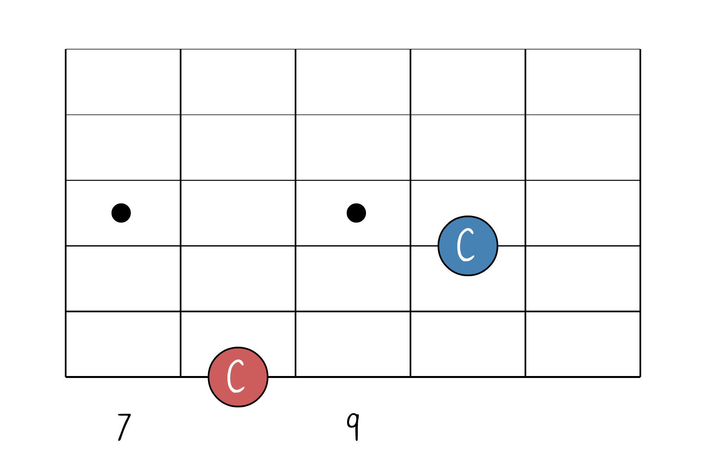
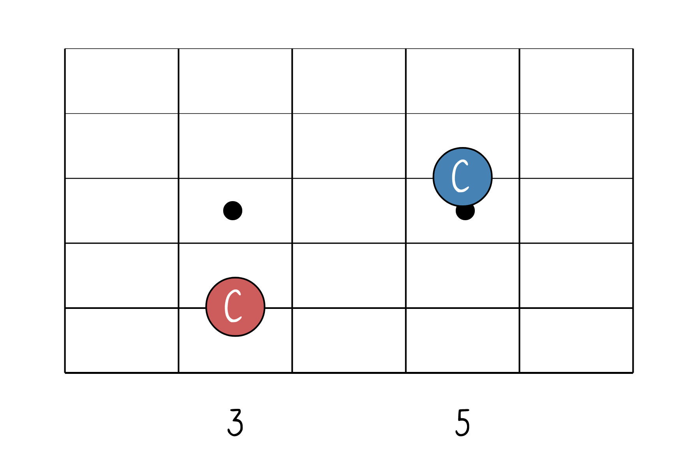
Here is an example of the Perfect 4th shape.
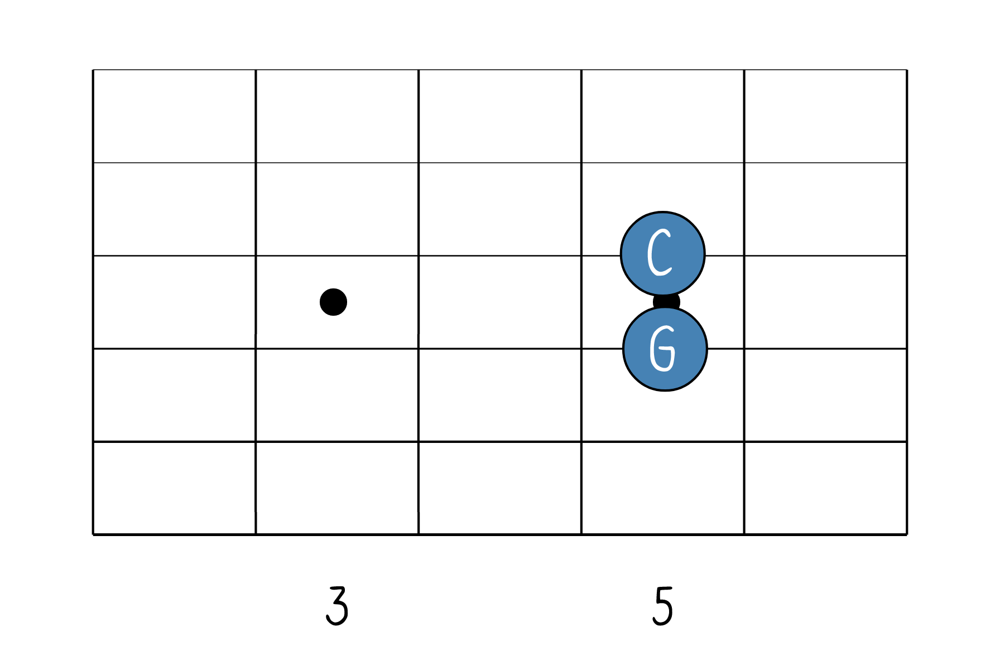
Music Theory: Chords In a Key
17
Most songs stay in a single key, and a song in the key of C is built mostly from the 7 notes of the C Major scale. So the power chords you’ll reach for when playing a song in C are exactly the ones you can build from that scale.
There are two steps you can do to figure out all of the chords in a key (this process is called harmonizing the scale):
Write the Major Scale horizontally.
Write the notes of each chord vertically.
So let’s find out all of the power chords in the key of C. First we’ll write out the C Major scale horizontally like so (I also included the scale degrees):
Notes ➡
C
D
E
F
G
A
B
Scale Degrees ➡
1̂
2̂
3̂
4̂
5̂
6̂
7̂
Here is the scale on a single string standard notation and tab:
Next, for each note in the scale, find the 5th interval to build the power chord.
Chord Degree
⬇
5
G
A
B
C
D
E
F
1
C
D
E
F
G
A
B
As you can see, each note in the scale is a root note for each chord. The left column indicates the generic chord degree. Every chord has a “1” (or root) and a “5th” relative to the root. Chord degrees do not have the caret above the number. Scale degrees will have the caret.
In standard notation and tab:
In standard notation, notice that you will always count a total of 5 lines and spaces from the root note in each chord to the 5th. For example, the “four” chord’s root note is F and is in the bottom space of the staff. From F to C, you count like so: space (1), line (2), space (3), line (4), space (5).
Chord Symbols
Chord symbols give you two pieces of information: the root note and the intervals needed to create the rest of the chord. You will typically see chord symbols (and chord diagrams) above the tablature (or standard notation). The first chord symbol we’ll learn about is the one for a Power Chord.
A “C” power chord symbol looks like this: C5. The root note is C. “5” indicates that you play, in addition to the root note, the 5th interval from C, which is the note G. That’s it. You only need to play those two notes in order to play the chord C5.
The 1st and 3rd diagrams above show you the fret number (8 and 10) where the root note lies. Sometimes, fingerings will be just below the chord diagram. In this case they are not indicated. Generally, I recommend using left hand fingers 1 and 3 to play a power chord. The 2nd diagram has a thick line at the top that represents the nut. Therefore there is no need to indicate a fret number.
Here is the Chords in a Key “matrix” with the chord symbols underneath each chord and the scale degrees in parentheses.
Chord Degree
⬇
5
G (5̂)
A (6̂)
B (7̂)
C (1̂)
D (2̂)
E (3̂)
F (4̂)
1
C (1̂)
D (2̂)
E (3̂)
F (4̂)
G (5̂)
A (6̂)
B (7̂)
C5
D5
E5
F5
G5
A5
??
I did not provide a chord symbol for the very last chord. I discuss why in Chapter 19.
The Fretboard: The 6 Power Chord Shapes in the Key of C
18
Here are the 6 Power Chords in the key of C where the root notes are on just the bass strings (and not beyond the 12th fret). The root notes in each chord are in red.
C5
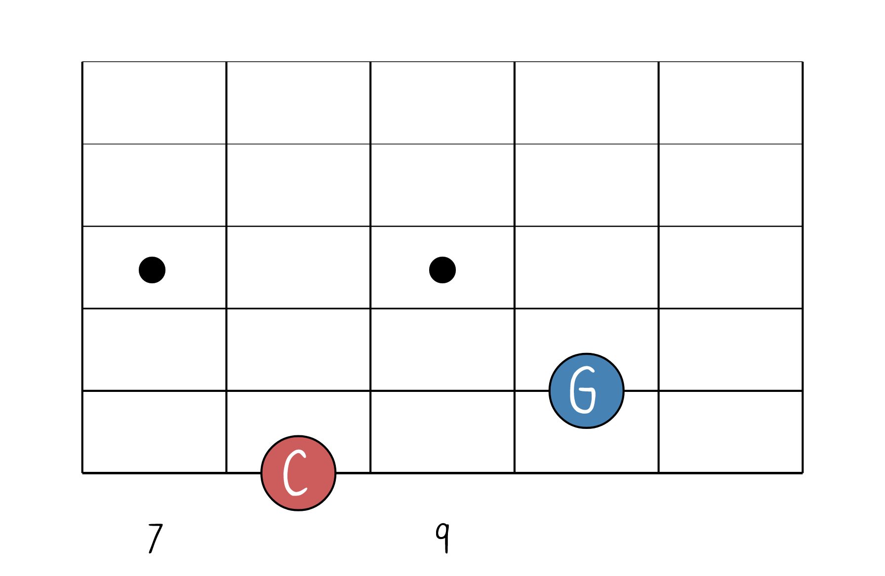
D5
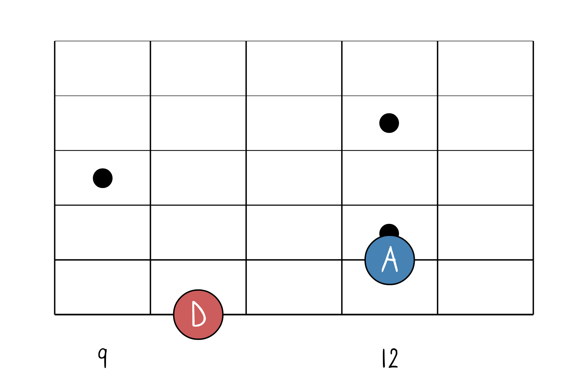
E5
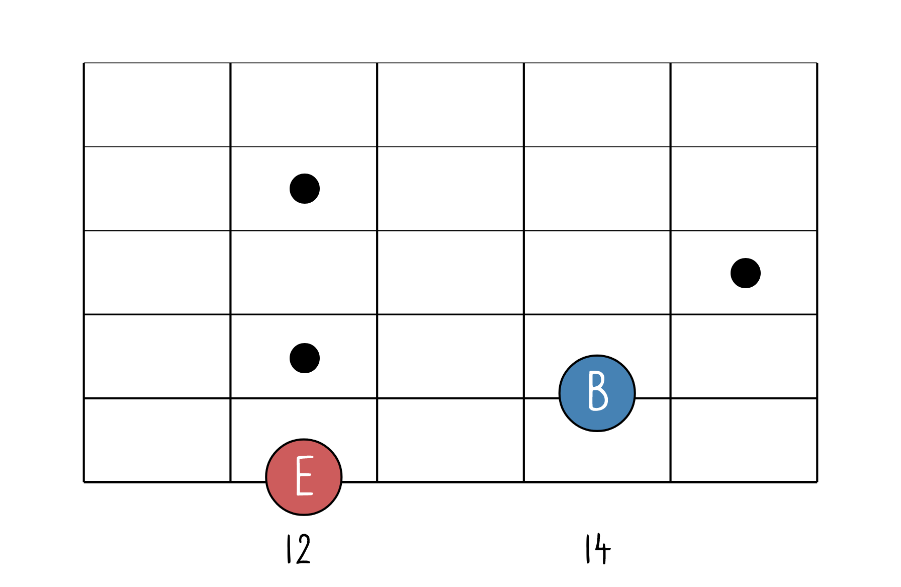
F5
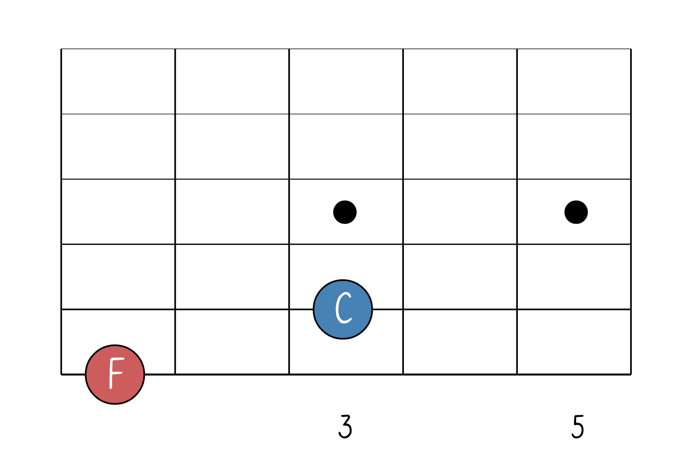
G5
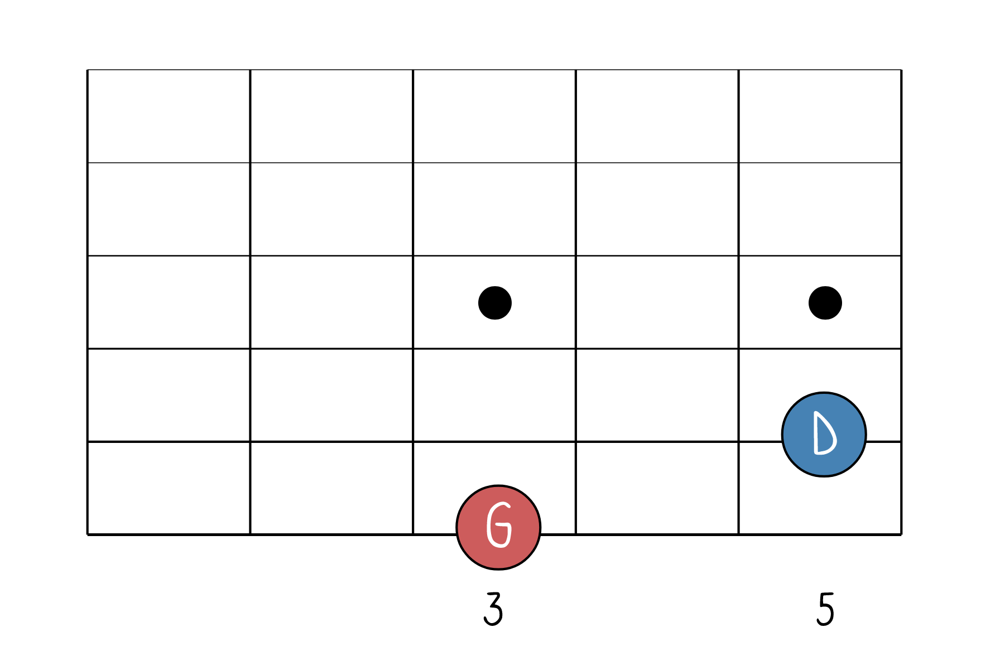
A5
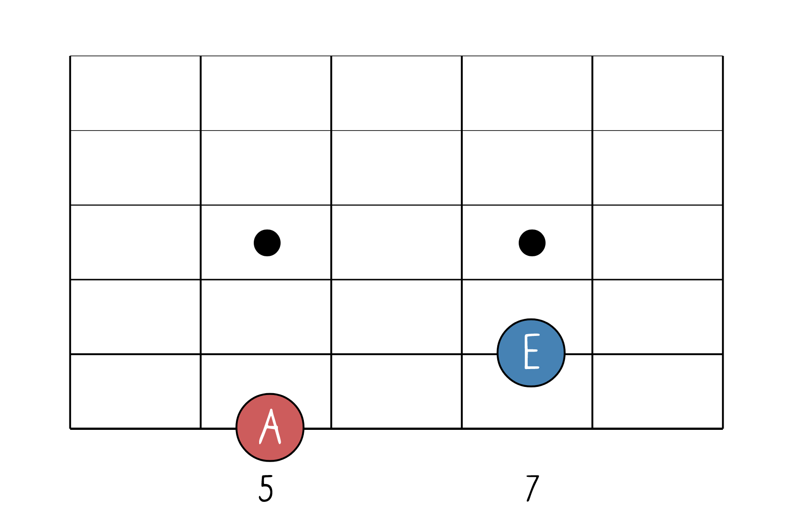
Here’s one important thing about actually playing these shapes: you only strum the strings that the shape sits on. A power chord on the bass strings is just 2 strings (the root and its 5th), so you don’t want to strum all six. If the extra strings ring out, the chord will sound muddy and confused. The fix is to mute the strings you’re not playing: lightly rest a free finger across them so they stay quiet, and aim your strumming hand at just the strings in the shape. It feels awkward at first, but with a little practice the muting becomes automatic.
Building the Power Chords in Standard Notation and Tab
Remember: scale degrees typically have a little caret above each number (also called a circumflex). Chord degrees do not have that special notation. The first chord degree is called the root. The first scale degree is called the tonic.
Music Theory: Why B–F is not a Perfect 5th
19
The interval B–F spans 5 note names. B (1), C (2), D (3), E (4), and F (5). Therefore, it is indeed a 5th interval.
But it’s a “Diminished 5th”, not a “Perfect 5th”. “Diminished” simply means one half step smaller than Perfect. As you know, a 5th is only Perfect when you traverse 7 half steps, and from B to F you only traverse 6. Use a single line of notes to count them, and remember to start counting from zero. B (0), C (1), unnamed black note (2), D (3), unnamed black note (4), E (5), and finally F (6). That’s only 6 half steps, one short of a Perfect 5th.
You can see the same thing on the fretboard. Compare the distance from E to B (7 frets) to the distance from B to F (just 6 frets). As discussed in previous chapters, E–B is a Perfect 5th, so B–F coming up one fret short is exactly what makes it Diminished.
The B–F interval, in the key of C, is the only 5th in the major scale that isn’t Perfect. Every other one (C–G, D–A, E–B, F–C, G–D, and A–E) is a Perfect 5th. And this isn’t special to the key of C. The 5th built on the 7th scale degree is always a Diminished 5th, in every Major key. It’s also the reason there are only 6 power chords in a key and not 7. You can’t build a power chord on the 7th note, because a power chord needs a Perfect 5th, and the 5th you get there is Diminished.
In summary, a 5th is only Perfect when you traverse 7 half steps. B–F traverses just 6, so it’s a Diminished 5th. And it will always be the 5th built on the 7th degree of the scale.
The Fretboard: The Diminished 5th Shape on the E-A-D-G String Set
20
The Diminished 5th shape is just the Power Chord (Perfect 5th) shape with the top note pulled back one fret. A Perfect 5th reaches 7 half steps across the strings. The Diminished 5th is one fret shorter, at 6.
For bass: Use the same B on the A string at fret 2 and F on the D string at fret 3. The fret pattern is identical; on bass it sounds one octave lower.
Remember from the last chapter that there are only 6 Power Chords in the key of C, not 7. B is the one note you can’t build a Power Chord on, and this shape is what you get when you try. Put your root on B (the 2nd fret of the A string) and the upper note on F (the 3rd fret of the D string). A real Power Chord would need that upper note one fret higher, so coming up a fret short is exactly what makes B–F a Diminished 5th.
Like the Power Chord shapes, this one is movable. Slide it anywhere along the E-A-D-G strings and the lowest note is still the root. Try fingers 1 and 2.
Unlike a Perfect 5th (Power Chord), the Diminished 5th doesn’t have a “powerful” sound. It’s quite dissonant. Try it out!
Music Theory: Chord Voicings
21
A Power Chord consists of two notes, a 5th apart. For example, the two notes that comprise the C5 Power Chord are C and G.
However, the note C also exists on the G string at the 5th fret. Many players add this extra C because it gives the Power Chord a fuller, thicker sound, like so:
For bass: These C5 voicings use the same fret numbers on the A, D, and G strings. They sound one octave lower than the guitar examples.
This is still a C5 Power Chord because no new notes were added. It is still comprised of C and G even though we added an extra C. The extra C makes this a different “voicing” of the C5 Power Chord. A voicing is simply a particular way of arranging a chord’s notes: which ones you double, and in which octave you place them. (That extra C is just the root C an octave higher.) I can add as many C’s and G’s as I want, in as many octaves as I want, and it’ll still be a C5 Power Chord.
And this isn’t only a Power Chord idea. Every chord can be played in different voicings, something you’ll keep running into as you learn new shapes.
The Fretboard: A Very Common Power Chord Voicing
22
A common power chord voicing is to include the root note of the chord a second time but an octave higher.
The Power Chord shape is the same whether its root is on the A string or the low E string. Here is C5 played in two different locations.
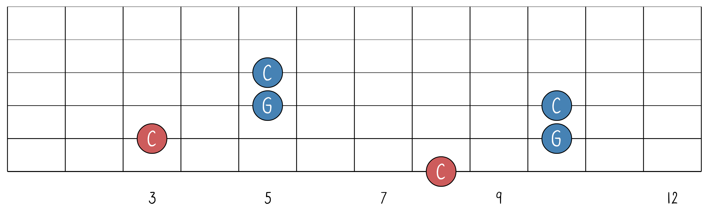
For bass: Although the diagram shows six strings, every active note is on the shared E–A–D–G strings. Use both shapes at the same fret locations; they sound one octave lower on bass.
Music Theory: Inverting the Perfect Intervals
23
The Perfect Interval Family is:
The Perfect Unison. It spans 1 note name and you traverse 0 half steps from the root tone to the next note in the interval.
The Perfect 4th. It spans 4 note names and you traverse 5 half steps from the root tone to the next note in the interval.
The Perfect 5th. It spans 5 note names and you traverse 7 half steps from the root tone to the next note in the interval.
The Perfect 8th (or Octave). It spans 8 note names and you traverse 12 half steps from the root tone to the next note in the interval.
In this chapter, we’ll discuss what it means to “invert” an interval. There are only two notes in an interval (the lower note and the higher 2nd note). To invert an interval, simply change the position of the notes so the lower note now becomes the higher note.
G5 is G–D. The lower note is G. The higher note is D. To invert it, take the G and make it the high note. So now it is D–G. The low note is D. The high note is G.
Take a moment and analyze the interval D–G. How many note names does it span?
Just count the letter names spanned... It spans 4 notes.
How many half steps must you traverse to get from D to G? When counting half steps, you must count every note (including the out-of-key black notes).
So what kind of interval is it? It is a Perfect 4th!
When you invert a Perfect 5th, it becomes a Perfect 4th interval.
When you invert a Perfect 4th, it then becomes a Perfect 5th interval.
Inverting a Diminished 5th (like B–F) creates the interval F–B. The half steps traversed from F to B is 6 but a Perfect 4th is only 5 half steps. Therefore the 4th, F–B, is a little larger and therefore we call it an “Augmented 4th”.
Two simple rules cover what happens to an interval’s quality when you invert it. A Perfect interval stays Perfect. A Diminished and an Augmented interval swap, so the Diminished 5th becomes an Augmented 4th, and the Augmented 4th becomes a Diminished 5th.
There’s also a handy shortcut for the numbers. An interval and its inversion always add up to 9. A 4th inverts to a 5th (4 + 5 = 9), and a Unison (a 1st) inverts to an Octave (an 8th), since 1 + 8 = 9. (It comes to 9, not 8, because the note you flip gets counted in both intervals.)
And here’s why inversion works the way it does. An interval and its inversion always add up to one octave (12 half steps). A Perfect 5th (7 half steps) plus a Perfect 4th (5 half steps) equals 12. A Diminished 5th (6) plus an Augmented 4th (6) also equals 12.
The Fretboard: Power Chord Inversions
24
Here is G5:
For bass: The fretboard diagrams in this chapter use only the shared E–A–D–G strings. The shapes and fret locations work exactly as shown on four-string bass and sound one octave lower.
To invert the interval, take the low note and make it the higher note:
G5 can also be played here:
And therefore, you can also think of inversion as bringing the higher note down and making it the lower note:
An inverted G5 is D–G, a Perfect 4th. The chord symbol is then “G5/D”. It’s pronounced like “G5 over D” or “G5 with D in the bass”. And the shape looks like this (a perfect 4th shape):
Here is tablature for both chord shapes along with the chord symbols and chord diagrams:
And just so that we’re clear, there is no chord symbol for the Perfect Unison or Perfect 8th.
Musical Application (Note Recall + Power Chords): Playing Along with Songs
25
Zombie by The Cranberries is a useful first play-along because its repeating progression—Em, CMaj7, G6, and G6/F♯—is easy to follow. Guitarists can simplify each chord to a Power Chord, while bassists follow the roots E–C–G–F♯.
The fretboard memorization exercise from Chapter 10 can be a bit boring. Here is a musical way to apply what you’ve memorized so far.
Simplify the progression
For Em, play E or E5
For CMaj7, play C or C5
For G6, play G or G5
For G6/F♯, play F♯ or F♯5
Bass practice: Start with the single roots E–C–G–F♯ on the E, A, and D strings. Then play the progression with octave shapes or Power Chords.
Because each root appears in several locations, choose positions that make the progression comfortable. The examples below show two ways to play E5–C5–G5. For the final F♯, try a single note, an octave, or F♯5.
Alternatively, you can play these power chords in a different location like so:
It’s totally up to you. You could even practice keeping all of the root notes on a single string.
This exercise is especially worth it when you encounter chords you do not know how to play. For now, ignore the suffix and extract only the root note. Then apply the power chord shape. Here are a few more conversions:
Dmaj7 or Dma7 become just D5
E7, E9, E11, or E13 all become E5
Am7, Ami7, Amin7, or A-7 all become A5
For any diminished-looking chord symbol, ignore the suffix and extract only the root note. For example, if you see C°7, then just play the single note C.
Side note: this is only a survival shortcut. We will discuss chord symbols more carefully in Level 2 (triad chord symbols) and Level 3 (7th chord symbols).
Music Theory: Intro to Sharps, Naturals, Key Signatures, and the G Major Scale
26
So far, we’ve been learning and discussing the key of C, including the C Major scale, Power Chords, and chord progressions in that key. The notes in the key of C are called “natural” notes. In reality, the full and complete name of each note is “C natural”, “D natural”, etc. However, most people will leave the “natural” part of the name off and just simply say “C”, “D”, etc.
The musical symbol for “natural” is ♮. So if we’re being unnecessarily pedantic the C Major scale would be labeled like this:
There are a few other ways to name a note. Some notes can get a “sharp”.
Let’s learn a new scale by building the G Major scale (a major scale where the tonic is G). Because all scales must contain each note name, we’ll first cut out a G string from all the available notes like so:
We now have all 12 notes from G to G. The second thing we need to check is to see if the labeled notes follow the 221-2221 Major Scale pattern.
They do not.
As you can see, the green F is not in the scale. Instead the unlabeled black note just before G should be in the scale as a labeled, “rainbow” note. What is the name of that note? The way that music theory solves this problem is by calling that unlabeled note “F♯” (pronounced “F sharp”). A sharp raises a note by one half step, so F♯ is the note one half step above F. On a fretted guitar or bass, that means moving one fret higher on the same string. We still need to have all 7 letters represented in the scale. We also need to indicate that the note is not F♮(“natural”).
Now both major scale attributes are accounted for:
The Major Scale must have each note name present. None are skipped and none are used twice. Even though the note, F, has a sharp symbol next to it, all 7 letter names are used (G, A, B, C, D, E, and F).
The scale must follow the “221-2221” (or wwh-w-wwh) interval pattern.
Try playing the G Major scale on the G string like so:
Guitar and bass: Both instruments have a G string with the same fret pattern. Play the open string, then frets 2, 4, 5, 7, 9, 11, and 12. The notes sound one octave lower on bass than on guitar. This is a scale-pattern exercise; Level 1 bassists still memorize fretted note locations only on the E, A, and D strings.
Key Signature
A “key signature” tells the performer which notes become a sharp or flat. An “accidental” is a sharp, flat, or natural sign placed directly in front of a note. Music written in the key of C has no accidentals indicated. Here is a simple ascending melody in the key of C:
In standard notation the key signature is placed at the beginning of a piece or the beginning of a section. It is circled in red here:
Now this piece of music is in the key of G. Music written in the key of G will have one sharp, F♯. In standard notation, only one sharp symbol is placed on the far left. The very top line represents the note F. However, all F’s will be sharped. That one symbol at the beginning saves the composer from having to mark a sharp in front of every single F throughout the piece.
In the guitar tablature above, the F♯ in measure 1 is played at the 4th fret of the D string. The F♯ in measure 3 is played at the 2nd fret of the high E string. The key signature applies to every F, no matter where it is played.
The key signature for the key of G is: one sharp and that is F♯.
The key signature for the key of C is: no sharps and no flats.
The natural sign (♮) has one more use. In a piece written in the key of G, if the composer wants you to play a plain F instead of F♯, they place a natural sign in front of that note. It cancels the sharp and tells you to play a plain F there.
The Fretboard: The G Major Scale and Power Chords in the Key of G
27
Now let’s play the G Major scale (and the Power Chords in the key of G) on the fretboard.
The G Major scale on a single string (1 octave), with scale degrees
Finger pattern for a 1 octave G Major scale
Guitar and bass: The E, A, D, and G strings shown in this six-string diagram are shared by guitar and standard four-string bass. This scale shape uses the E, A, and D strings and leaves the G string unused; bassists can ignore the B and high E strings. Start on G at the 3rd fret of the low E string and finish on G at the 5th fret of the D string. The fret locations work unchanged on bass and sound one octave lower. The printed finger numbers are guitar fingering suggestions; bassists should shift the fretting hand when needed instead of forcing a wide stretch across frets 2–5.
In standard notation and tablature
1 octave scale in open position
The 6 Power Chords in the key of G
Music Theory: Key of D (two sharps)
28
So far, we’ve learned about the key of C and its Major Scale…
…the key of G and its Major Scale…
Now, let’s build the D Major Scale. But let’s first see if we can notice any patterns when we built the G Major Scale.
Perhaps you noticed that G is a 5th from C. Count it out: C-D-E-F-G…1, 2, 3, 4, 5.
Similarly, D is a 5th from G. Count it out: G-A-B-C-D…1, 2, 3, 4, 5.
If “going” from C to G meant that we need to add 1 sharp to our key signature, does that mean we’ll need to add another sharp when building the D Major Scale?
C has no sharps (or flats).
G has 1 sharp.
Therefore, D must have 2 sharps? Let’s check…
When you apply the 221-2221 formula, you’ll need a half step between two sets of scale degrees: the 3rd–4th and the 7th–1st. In other words, those notes must be right next to each other. I start on D (the tonic or key-note). Then I use arrows to show you that I applied the 221-2221 formula.
In the above graphic, the 3rd labeled note is F♮(natural) and the 4th labeled note is G♮(natural). But they are separated by an unnamed note (ie. a whole step apart). The 221-2221 formula tells us that we need the note that is in-between those two notes. We’ll call it F♯ (sharp). And we’ll put F♮(natural) away and let it become a black note that is not part of the scale.
Next, you’ll also notice that C and D are a whole step apart (ie. separated by an unnamed note). Again, the 221-2221 formula tells us that we need to use the note in-between C♮(natural) and D♮(natural). Let’s call it C♯. We’ll then put C♮(natural) away and let it become a black note that is not part of the scale.
So, yes the pattern fits! The key of D has two sharps.
Notice what happened: the key of D kept the F♯ from the key of G and added just one new sharp, C♯. That’s the pattern. Each time you go up a 5th to a new key, you keep the sharps you already had and add exactly one more.
And that new sharp is always the 7th note of the new scale, a half step below the tonic. F♯ is the 7th note of G Major, and C♯ is the 7th note of D Major.
The Fretboard: The D Major Scale and Power Chords in the Key of D
29
Now let’s play the D Major scale (and the Power Chords in the key of D) on the fretboard.
The D Major scale on a single string (1 octave), with scale degrees
Finger pattern for a 1 octave D Major scale
Guitar and bass: The E, A, D, and G strings shown in this six-string diagram are shared by guitar and standard four-string bass. This scale shape uses the E, A, and D strings and leaves the G string unused; bassists can ignore the B and high E strings. Start on D at the 10th fret of the low E string and finish on D at the 12th fret of the D string. The fret locations work unchanged on bass and sound one octave lower. The printed finger numbers are guitar fingering suggestions; bassists can use the same fingering in this higher position if it feels comfortable, or shift the fretting hand rather than stretch.
In standard notation and tablature
The 6 Power Chords in the key of D
Music Theory Exercises: Building the A, E, B, and F♯ Major Scales
30
Let’s build the A, E, B, and F♯ Major scales.
Exercise 1—The A Major Scale
In this exercise, I provide the natural notes from A to A on the A string, from the open string through the 12th fret. I also give you the major scale formula of 221-2221 above the A string. Notice the “2” between A and B? That is the first number of the formula, and it tells you to move 2 frets up the A string from A to reach the next note in the scale, B.
Guitar and bass: This exercise runs from the open A string to the 12th-fret A. Use only the A-string row and ignore every other string row. The fret locations are identical on both instruments, and the bass notes sound one octave lower than the guitar notes.
Determine which notes need to become sharp in order to fit the formula. I’ll give you a hint. There are 3 notes in the A Major scale that must become sharp. Write the notes of the scale and also the scale degrees:
A
A
1̂
8̂ (1̂)
Exercise 2—The E Major Scale
Guitar and bass: This exercise runs from the open low E string to the 12th-fret E. Use only the low E-string row and ignore every other string row. The fret locations are identical on both instruments, and the bass notes sound one octave lower than the guitar notes.
Determine which notes need to become sharp in order to fit the formula. Write the notes of the scale and also the scale degrees:
E
E
1̂
8̂ (1̂)
Notice a pattern?
Before moving on, take note of how many sharped notes there are in each of the keys that we have studied so far. C has 0 sharps (of course). G has 1. D has 2. A has 3. E has 4. Notice a pattern?
What is the interval from C to G? C (1), D (2), E (3), F (4), G (5). C to G is a fifth. Similarly, G to D is a fifth. D to A is a fifth. And so on.
If E to B is a fifth, then that must mean the B major scale has just one more sharped note than E for a total of 5 sharps. And the F♯ major scale then must have a total of 6 sharps.
There’s also a pattern to which notes get sharped. The sharps always appear in this order: F♯, C♯, G♯, D♯, A♯, E♯. So A Major (3 sharps) uses the first three (F♯, C♯, G♯), and E Major (4 sharps) adds the next one (D♯). That order is itself a chain of 5ths: F-C-G-D-A-E.
One more thing, the note that is different between the C Major scale and the G Major scale is the 7th scale degree of the G Major scale. So a shortcut to create the G Major scale would be:
Write out the C Major scale but start from G: G – A – B – C – D – E – F – G
Make the 7th scale degree sharp: G – A – B – C – D – E – F♯ – G
Neat, huh?
So we now have the G Major scale written out. To create the D Major scale, write out the G Major scale but start with D.
D – E – F♯ – G – A – B – C – D.
Then make the 7th scale degree sharp. It is now D – E – F♯ – G – A – B – C♯ – D which is the correct D Major scale.
Exercise 3—The B Major Scale
Write out the E Major scale beginning from B and ending on B.
Make the 7th scale degree sharp.
B
B
1̂
8̂ (1̂)
Exercise 4—The F♯ Major Scale
Write out the B Major scale beginning from F♯ and ending on F♯.
Make the 7th scale degree sharp.
Watch out: to keep all seven letter names, the 7th scale degree must be written as E♯ (which sounds the same as F natural), not F.
F♯
F♯
1̂
8̂ (1̂)
Answer key
In every case the scale degrees run 1 through 8. The notes are:
A Major: A, B, C♯, D, E, F♯, G♯, A (three sharps: F♯, C♯, G♯)
E Major: E, F♯, G♯, A, B, C♯, D♯, E (four sharps: F♯, C♯, G♯, D♯)
B Major: B, C♯, D♯, E, F♯, G♯, A♯, B (five sharps: F♯, C♯, G♯, D♯, A♯)
F♯ Major: F♯, G♯, A♯, B, C♯, D♯, E♯, F♯ (six sharps: F♯, C♯, G♯, D♯, A♯, E♯; the 7th is E♯, not F)
BONUS: Introduction To Standard Notation (sheet music)
Because the same note occurs in different positions on the guitar, many guitarists mistakenly think that reading sheet music (“standard notation”) is impossible. Beginning string players (violinists, violists, etc) have all used the same method to learn how to read music. They begin with first position. And therefore we can utilize the same strategy as guitarists.
When you play in a single position, there is only one possible location for any given note (except for the unison note between the 3rd and 2nd strings). The natural notes in first position (sometimes called open position) looks like this on the fretboard:
All notes, scales, modes, and chords are available to you in first position. You’re only limited by the upper range of notes.
The top space of the treble clef is the note E. As you can see below, you can play this note in 6 different positions on a 24 fret guitar.
However, in first/open position, your only option is to play the open E string. The 5th fret of the 2nd string is outside first position. The exercises in this book will limit your playing to just the first 4 frets of the guitar so that you won’t need to worry about trying to decipher which “E” to play.
Here is an overview of all the natural notes (ie. notes in the key of C) in first position in tab and standard notation.
The second strategy utilized in this book is that you’ll learn to read string-by-string. Start with the notes on the high E string then the notes on the B string then the notes on the G string and so on.
To get started with learning how to read standard notation, there are a few terms we need to define.
Beat = the pulse of music
The beat of music is like your heart’s pulse. It is steady and consistent. If you listen to any song, you should be able to tap your foot to the beat of the song.
Quarter note = 1 beat of music
Written notes in sheet music not only tell you the pitch (ie. which fret of the guitar) but also how long you should play that note. The time it takes from one beat of music to occur up until the very next beat is exactly how long a quarter note should be played. The easiest quarter note to play is the one that is synced with the beat of the music.
Music Staff
The music staff has 5 lines and 4 spaces. Higher pitches are at the top of the staff. Lower pitches are at the bottom of the staff.
Bar Lines (or measure lines)
Bar lines (the vertical lines seen below) divide the music staff into measures. When music is divided into measures, it makes it easy to communicate with your bandmates where you want to start or end because they are often numbered.
Measures
Each measure contains a certain amount of beats. A common amount is simply 4 beats in a single measure. However, we will also learn to read music that has 2 beats in a measure and 3 beats in a measure. The quarter note gets its name because it’s very common for music to have 4 beats in a measure and therefore each beat is a quarter of the entire measure 1/4 + 1/4 + 1/4 + 1/4 = 1 (or the whole measure). So in this case, if a note = beat, then it is a quarter note.
Time Signature
There are two aspects to a time signature. First, the “time signature” tells us how many beats are in each measure. Again, it’s common to have just 4 but it’s possible to have 2, 3, 5, 6, or 7 beats in a measure too.
Second, the time signature tells us which type of note gets the pulse of the music. Again, the most common is the quarter note = 1 beat of music.
The top number = number of beats per measure (4). Bottom number = the type of note that gets the beat (1/4 note).
Double Bar
A double bar indicates the end of a piece of music or a transition within the music. The double bar is on the far right.
Counting
Here is a piece of music that lacks pitch and only indicates rhythm. With this type of sheet music, you can play a single note, a single drum, or other percussion instruments. Its time signature is “4/4” which means there are 4 beats per measure and that the quarter note gets the beat. Above each note, I’ve indicated how you should “count” the music. Notice that you start over with each measure. Feel free to clap this rhythm and count as you clap. Are you able to do so with a steady and consistent pulse?
Now, try playing the above with the just open E string. Tap your foot and play the open E string at the same time. Are you able to play with a steady pulse? Are you able to play the E string on the guitar and tap your foot at the same time? These are skills that I learned to do in elementary school on my first instrument (the saxophone). And so I believe that all guitarists should learn to tap their foot while the play. It will help you develop an internal sense of rhythm.
The Treble Clef
There are a variety of “clefs” and their job is to tell us which notes the spaces and lines represent. The Treble Clef symbol (at the very far left) tells us that the lines of the music staff represent the notes (from bottom to top): E, G, B, D, and F. It also tells us that the spaces of the music staff represent the notes (from bottom to top): F, A, C, and E.
Notes on the E String
32
To begin learning how to read standard notation, I will use a combination of tab and standard notation to show you which fret to play. Here is the top space (E) and the top line (F) of the staff. Before playing the music, count yourself off like so: “One, Two, Three, Four.” Say each number with a consistent and steady pulse because that will be the speed at which you play the guitar. A common mistake that beginners do is they verbally count quite fast and then when they begin to play it’s a little slower. A trick is to tap your foot while you count “1, 2, 3, 4” and then keep tapping your foot at the same speed. When you play, sync your playing to your foot so that you maintain that same pulse.
These are quarter notes. Play each note so that each one is heard exactly as you tap your foot.
Ties and Half Notes
This next piece of music shows how you can “tie” two notes together. Pluck the E string on beats 1 and 3 of each measure. I put beats 2 and 4 in parenthesis to help you count. Do not pluck the notes on beats 2 and 4. Hold each note on beat 1 “over” to beat 2 and the pluck the note that occurs on beat 3. Hold that one “over” to beat 4. And so on. I also removed the tab as you should know how to play these two notes (E and F).
Another way to write this piece of music is to utilize “half notes”. A half note is twice as long as a quarter note (or two quarter notes tied together). The half note looks similar to the quarter note except it is has an “empty” head. Notice how you can see the line “behind” the F note in measure two?
Whole notes are like two half notes tied together. It is 4 beats and takes up the whole measure rhythmically. Its symbol lacks the “stem”. The “stem” is the line the extends below (or above) the note’s head. It also has an “empty” note head.
The Note G is above the staff and The Down Stroke/Pick Symbol
Musical notes can extend above and below the staff. Look at measure 3. If the top line represents the note F, then the space above that line is G because the note G is the next note up from F. G is on the 3rd fret of the high E string.
Also notice the symbol above the 4 E’s in the first measure. This symbol means that you should pick downwards on the string. You were probably already were doing that. And the reason why only the 1st measure has the down pick symbol is because it’s assumed that you’ll continue the same picking pattern for the 3 remaining measures.
Try These Exercises
Exercise 1. Every note is on the beat. There is a half note at the end where you hold the note for two beats.
Exercise 2. Remember to use the first finger for the note F and the third finger for the note G.
Exercise 3. Quarter notes and Half notes
Exercise 4. Quarter, Half, and Whole Notes
Rests
Exercise 5. “Note Rests” are the way composers tell you to not play anything. Here is “Exercise 4” with the quarter notes replaced as quarter rests. When you see the rest symbol, do not play. Let your foot tap that beat in silence. The numbers above the staff will guide on how you should count each note and rest. I like to indicate rests as a count in parenthesis. Remember to use your first finger for the note F and your 3rd finger for the note G.
Exercise 6. Here is “Exercise 4” with the half notes replaced as half rests.
Exercise 7. Here is “Exercise 4” with the whole note replaced with a whole rest.
Notes on the B String
33
The middle line in the staff is the note B. Simply play your open B string (the 2nd string). The note above B is C which is in the 2nd space from the top of the staff. On the guitar, C is the 1st fret of the B string. The note above C is D which is on the 2nd line from the top of the staff. On the guitar, D is the 3rd fret of the B string.
B String Exercises
Exercise 1.
Exercise 2.
Exercise 3. Quarter notes and Half notes
Exercise 4. Quarter, Half, and Whole Notes
E and B String Exercises
Exercise 5. This one looks harder than it really is. I’ve added fingerings next to some of the notes.
Exercise 6. The first five notes of the C Major scale.
Exercise 7. The C Major Triad Arpeggio.
Exercise 8. Double Stops. A “double stop” is where you play two notes at the same time. Initially, place your pick in between the G and B strings and strum only the B and E strings. Strum quickly so that the two strings are heard at the exact same time. Each double stop is a whole note so try to let the notes “ring out” for a full 4 beats.
Exercise 9. The Half Barre or Partial Capo. A full “barre” is where you place your first finger across all 6 strings. A half barre only crosses some of the strings. In this exercise, you’ll barre just two strings (the E and B). To play this “half barre” place your first finger across both the E and B strings. For measures 1 and 3, you’ll barre the 1st fret. For measures 2 and 4, barre the 3rd fret. In guitar sheet music, there are multiple ways to notate a “half barre”. It’s often called a “capo” because composers will use a capital “C”. When there is a C with a slash through it (measures 3 and 4), that means it is a half barre. The roman numerals next to the capo symbol indicate the fret where you’ll place your barre (your first finger).
Notes on the G String
34
Exercises
Exercise 1. Just G and A. Play A with your 2nd finger on the G string (the 3rd string).
Exercise 2. String Indicators. Sometimes in guitar sheet music, you will see a number inside a circle above a note. This is meant to help guide you where you should play the note on the guitar. 1 = the high E string. 2 = the B string. 3 = the G string. In the first measure, you’ll play the notes C and D on the 2nd string. When you get to E, you’ll play those notes on the 1st string until you get to the note D in the third measure. And if you see a small number to the left of a note, that is a fingering suggestion. In the third and fourth measures, play A with your 2nd finger (G string, 2nd fret).
Exercise 3. Arpeggios and Chords. Here are the two chords, C Major (C) and A Minor (Am). In the first line, the chords are arpeggiated which means that the chord tones are played separately. On the second line, they are played together. Above each measure is the chord symbol. Notes are never labeled with their letter name. So if you see a lone letter (like “C”), then it is a chord symbol for a major chord. So when you see “C”, you pronounce it as “C Major”. The little “m” in the chord symbol “Am” is short for “Minor”. So “Am” is pronounced “A Minor”.
Exercise 4. The C Major and E Minor chords.
Exercise 5. The F Major and G Major arpeggios and chords. On the second line, you’ll utilize a “half barre” to help you form the F and G chords. When playing the G Major chord, use the exact same shape as you did with the F Major chord but moved up two frets towards your picking hand. For the G chord, barre the D and G notes. The note B can be played on the 4th fret of the G string with the 2nd finger.
Exercise 6. Ode To Joy by Beethoven
Exercise 7. “Au clair de la lune” (literally ’By the Light of the Moon’) is a French folk song of the 18th century. Its composer and lyricist are unknown. Its simple melody is commonly taught to beginners learning an instrument. https://en.wikipedia.org/wiki/Au_clair_de_la_lune
Choose to play either the top line (Gtr. 1) or the bottom line (Gtr. 2). If you have a guitar friend or guitar teacher, have them play with you.
Exercise 8. One octave G Major scale. The F in measure has a “sharp” in front of it which makes it “F sharp”. That note is played on the 2nd fret of the 1st string.
Notes on the D String
35
Exercise 1. D’s, E’s, and F’s.
Exercise 2. Practice on the D and G strings.
Exercise 3. D5 (power chord), D Minor, and A Major chords and arpeggios.
Exercise 4. G, Am, C, and D Chords.
Exercise 5. One octave D Major scale. This scale has two sharps—C sharp and F sharp.
Notes on the A String
36
Ledger Lines
The notes on the A string are below the staff and therefore require “ledger lines”. Ledger lines are how composers extend the staff’s range of possible notes.
Exercises
Exercise 1. The dotted half note. When you see a “dot” to the right of that note, it means that the note is played a little longer. A dotted half note is 3 beats. The logic is that you take half the rhythmic value of the note (a half note divided by two is 1) and then add that to the note (1 + 2 is 3). I’ve labeled the counting above the staff for you.
Exercise 2. One Octave C Major Scale
Exercise 3. The C Major chord.
Exercise 4. This song, Greensleeves, has a “3/4” Time Signature. There are only 3 beats in each measure.
I would bet that you are familiar with the song “Do-Re-Mi” from the musical “The Sound of Music”. Even if you haven’t watched the movie, chances are you know the catchy tune: “Do, a deer, a female deer / Re, a drop of golden sun…”
While the lyrics may seem lighthearted and reminiscent of a nursery rhyme, they actually serve a significant purpose in teaching the fundamental musical skill known as solfège.
“Solfège” is heavily used in choir classes and private singing lessons. It is the tool that music teachers use to help the student develop their “musical ear”. However, many music students who go through a typical American education never learn how to develop their musical ear. Instead, their teachers require them to be very good note readers and performers. Of course there’s nothing wrong with performing written music from a page. But the most important aspect of becoming a musician is learning how to audiate. Audiation is the ability to produce the music on your instrument that you can imagine or “hear” in your head.
Solfège is one of the primary tools that you will use to learn how to audiate. I will provide you with some practical exercises that you can start incorporating into your daily routine.
Solfège is a naming system that assigns a unique name to each note in a scale. It utilizes a method called solmization, which assigns a single syllable (such as Do or Re) to each scale degree. These syllables differ from the actual note names (such as C or D).
The most commonly used solfège scale in music education is the major scale, which consists of the syllables Do, Re, Mi, Fa, Sol, La, Ti, and Do again. Because these syllables match the scale degree, they can be applied to any major scale, regardless of the key. For example, both the C major scale and the E major scale would use the same solfège syllables in the exact same order. In the key of C major, Do represents the note C, whereas in the key of E major, Do represents the note E. In C major, Re represents the note D. In E major it represents the note F♯ (“F-sharp”).
“Do” changes depending on the key you are in, hence the term “movable Do”. This concept is beneficial as it allows you to internalize the relative nature of every scale without having to sing every scale.
How To Do The Exercises
Each exercise has a high part and a low part. The high part is for people who are sopranos or altos. The low part is for people who are tenors, baritones, or basses.
Play the guitar part that is appropriate for your voice—either the top line or the bottom line. Play those few notes and memorize the melody.
Then do your best to sing the notes without playing at all. At first, you will be off. That is okay. You must learn to sing without using a crutch. The more you exercise this “audiation” muscle, the better you will get at it.
However, for the “Do – Mi – Sol” exercises, I included the C Major chord for you to play to accompany yourself because you will be singing the chord tones of that chord. It’s important to learn how to sing one of the notes in a chord and get a sense of how that feels.
If you absolutely must, play the guitar and sing the notes at the same time (in unison). Try to avoid doing that but it’s understandable if you need to do that at first.
If you cannot match the pitch on the guitar, see if you can find a friend to sing the note. Then try to match their voice. Sometimes it can be easier to match the pitch from someone else’s voice than from an instrument.
Major and Minor Intervals - Introducing The "Imperfect Interval Family"
44
In Level 1, we introduced the Harmonic (Overtone) Series and found out that the first few intervals that occur in nature are Perfect intervals, namely the Perfect octave, Perfect 5th, and the Perfect 4th. And because of this natural phenomenon, Level 1 dives deep into these intervals and how they form the essential components of Power Chords. Here is a link to that chapter.
Going back to the Harmonic (Overtone) Series, the next two intervals that occur are the Major 3rd and Minor 3rd.
You can hear the interval jump by playing higher up the harmonic series on the low E string of the guitar. Fret “3.2” is just beyond the 3rd fret.
The 3rd Interval is part of the “Imperfect Family” of intervals. 2nds, 3rds, 6ths, and 7ths are all imperfect intervals. Whereas Unisons, 4ths, 5ths, and 8ths are part of the “Perfect Interval Family”. We’ll start with discussing the 3rd interval because the G string and the B string are a 3rd interval apart. Therefore it’s important we explore some of the interval and chord shapes that happen on the treble strings (string set 3-2-1).
The imperfect intervals are typically thought of as either “Major” or “Minor”. So what is the difference between the “Major 3rd” and the “Minor 3rd”? As we know from Level 1, the number of letter names spanned in an interval is its quantity (the general classification). Therefore both the Major and Minor 3rd intervals must span 3 note names.
However the interval quality is not the same between the two. The interval quality of the Major 3rd, being the number of half steps traversed, is bigger than the Minor 3rd. You must traverse 4 half steps in a Major 3rd but only 3 half steps in a Minor 3rd.
The first Major 3rd interval we’ll look at is G–B. G–B spans 3 note names— G (1), A (2), and B (3). And you must traverse 4 half steps from G to B— G, G♯(1), A (2), A♯(3), B (4). You can verify this on the G string (3rd string) on the guitar. The 4th fret of the G string is the note B.
Typically, the 3rd fret of any guitar will have a dot inlay fret marker. This particular fret marker indicates the Minor 3rd interval relative to each open string. On the E strings, the 3rd fret is the note G. E–G is a Minor 3rd interval because it spans 3 note names and you only need to traverse 3 half steps—E, F (1), F♯(2), G (3).
Major is bigger than Minor. Or Major = Big and Minor = Little.
Think of the Big Dipper and Little Dipper asterisms (which are recognizable patterns within a constellation). The Big Dipper is part of Ursa Major constellation and the Little Dipper is part of Ursa Minor constellation.
Standard Tuning and Major/Minor 3rd Shapes
45
So after all of that, we can now make sense of the guitar tuning. It is tuned in 4ths except for the G–B (3–2) string set.
The above tab also helps you see that the Perfect 4th interval is 5 half steps but the Major 3rd interval is 4 half steps.
Below are all possible Major 3rd (M3) shapes on the guitar. The first shape is a vertical shape between the G–B strings. Between every other string pair, the M3 (Major 3rd) shape is a diagonal where the higher note is back one fret towards the nut.
Below are all possible Minor 3rd (m3) shapes on the guitar. The first shape is the diagonal shape between the G–B strings. Between every other string pair, the m3 (Minor 3rd) shape is a steeper diagonal where the higher note is back two frets towards the nut.
So far we have discussed Unisons, Thirds, Fourths, Fifths, and Octaves. Here are there most commonly used shapes on the guitar—
Secondary Chords in a Key
47
The process for creating secondary chords is the same as the one for primary chords. However, the Roman numeral chord notation is different for secondary chords. To start, we’ll just build a chord without labeling its Roman numeral. Here is the Three chord in the key of C and the Six chord in the key of G—
Exercise for you: build the Two chord in the key of D.
Unlike Roman numeral notation for Primary chords, there are two ways to write the Roman numerals for Secondary chords—Classical and Jazz. It’s important that you know both.
The reason why Secondary chords’ Roman numerals are different is because they are Minor and Diminished triads whereas the Primary triads are Major (in a Major key).
Major, Minor, and Diminished Triads
48
In chapter 1, we discussed the Major and Minor 3rd interval. Understanding these two intervals will be the foundation for having a solid understanding of the triad. To review—
Major and Minor Triads
The Major triad is a Major 3rd + a Minor 3rd. The Minor triad is reversed—a Minor 3rd + a Major 3rd. Take a look at these two examples.
The first Major triad built is called “G Major” and its chord symbol is just “G”. The next triad is a Minor triad and it is called “E Minor”. Its chord symbol is “Em”.
I’m using these two examples because the G Major triad is found in all three keys that we have studied so far. It is the V chord in the key of C, the I chord in the key of G, and the IV chord in the key of D. Therefore we know that a Major triad is not defined by the Major scale but rather the intervals that make up the chord.
The same goes for the E Minor triad. It is the iii chord in the key of C, the vi chord in the key of G, and the ii chord in the key of D.
When online guitar teachers recommend their viewers to think of the G Major scale to create the G Major triad, they are giving you a shortcut. A shortcut is indeed useful! But now you have a much more solid understanding of triads and how they fit within a key.
Diminished Triads
A diminished triad is when you stack two minor 3rds together. In the key of C, B–D–F creates the B diminished triad. B–D is a minor 3rd and D–F is a minor 3rd. Take a look at these three diminished triads—
Diminished triads get a lowercase Roman numeral as well as small raised circle. The Diminished triad gets its name from the Diminished 5th interval that occurs from the 1st chord degree to the 5th chord degree. To review, let’s compare the Perfect 5th interval against the Diminished 5th interval—
Common Triad Voicings (CAGED)
49
Triads are strictly 3 note chords. Triad voicings are 4+ note chords whose chord tones come from the triad note set {1, 3, 5}. These voicings will double some (or all) of the notes in the set of triad chord tones.
In measure 1 below, there is the C Major triad with 3 notes. In measure 2, there is the common open position C Major triad voicings. Its notes are C, E, G, C, E from the set of notes {C, E, G}. In measure 3, there is a different voicing of C, E, G, C, G. Its set of notes is still {C, E, G}. All three chords are valid ways of playing the C Major chord.
Here is the G Major triad and two G Major triad voicings. The first chord on the left is the “pure” 3-note G Major triad. The second chord is a G Major triad voicing that is often found in folk/pop songs. The third chord also a G Major triad voicing that is often found in rock songs.
Here are 6 more chords—the “pure” 3-note triad and then a 4+ note triad voicing of that same chord. The “pure” D Major triad is re-ordered so that that 3rd is on top. This is called an inversion and we’ll discuss inversions in detail in a later chapter.
Harmonic Zones and CAGED Shapes
This goes without saying but songs will generally have multiple chords that make up the harmony of the song. This is called a “chord progression”. A popular chord progression is the I – IV – V – I. In the key of G, this would be G – C – D – G. At a certain fundamental level, there are two ways to play this chord progression
Play in multiple Harmonic Zones but utilize only a single CAGED shape.
Play in a single Harmonic Zone and utilize multiple CAGED shapes.
A “harmonic zone” is a term I use. I define it as any small area of the fretboard that spans 5-7 frets. It can span 1 to 3 positions but shouldn’t require that much shifting.
Multiple Harmonic Zones and the E Shape
Multiple Harmonic Zones and the A Shape
Here is a breakdown of the chords and their available positions—
Chord
Available Positions
G
3 (E Shape), 10 (A Shape)
C
3 (A Shape), 8 (E Shape)
D
5 (A Shape), 10 (E Shape)
Chords that share the same Harmonic Zone:
G (E Shape) and C (A Shape)
G (A Shape) and D (E Shape)
Now we can formulate new ways to play this chord progression by using multiple shapes. Here are two options.
one Harmonic Zone and multiple shapes (option 1)
one Harmonic Zone and multiple shapes (option 2)
Appendix
1
And that’s it for Level 1!
Looking forward to Level 2? Here is the Level 2 Table of Contents
Level 2 Fretboard Exercises to Get You Started
Music Theory: The Imperfect Intervals (Major and Minor)
The Fretboard: Major and Minor 3rd Shapes
Music Theory: Compound Intervals (10ths)
The Fretboard: Common 10ths Shapes
Music Theory: The Minor Scale and Relative Keys
The Fretboard: Minor (and Minor Pentatonic) Scales
Music Theory: Major and Minor Triads
The Fretboard: Major and Minor Triad Shapes (String Set: 1-2-3)
Music Theory: Numbering Chords with Roman numerals
Music Theory: Triad Inversions and the Major/Minor 6th Interval
The Fretboard: Triad Inversion Shapes and 6ths
Music Theory: Harmonizing The Major Scale and The Diminished Triad
The Fretboard: Chord Progressions and Where to Play These Triads
Music Theory: Sus2 and Sus4 Chords
The Fretboard: Sus2 and Sus4 Shapes
Music Theory: Interval Review (Unisons, 2nds, 3rds, 4ths, 5ths, 6ths, and 8ths)
The Fretboard: Interval Shapes
Music Theory: Introduction to Flats
The Fretboard: The F Major Scale
More Major Scales
Tonic vs. Root. Why do I use the term "Tonic"?
2
In school, I’ve been taught that Tonic refers to the first note of the scale. And “root” refers to the foundational note of a chord.
But many people use “root” to refer to both (first note of a scale and the foundational note of a chord). I think this confuses beginners. I recommend that teachers use the correct terminology and stop using root to refer to the first note of a scale. Here are 6 reasons why.
Musicians have used tonic to uniquely identify the first note of a scale for hundreds of years. Certainly, beginners have had no issues with that term prior to the invention of the internet. The book Elson’s Pocket Music Dictionary was published in 1909 and correctly defines each term.
“Tonic. The key-note of any scale; the chief, fundamental ground-tone, or first note, of the scale.” (p. 149)
“Root. The fundamental note of any chord.” (p. 126)
Beginners actually get confused when you use root to both uniquely identify the first note of the scale and as the fundamental note of a chord. When beginners see a chord chart with a simple progression like 1-4-5 in the key of C, they will sometimes ask “For the C Major chord, do I play the C Major scale? And then for the F Major chord, do I play the F Major scale? And then for the G Major chord, do I play the G Major scale?”
This is obviously wrong. But how can you blame them? They’re only being logical, in my opinion.
There are lots of terms in music that are much more confusing. There’s no need to try to change just 1 word when we use thousands of other complex jargon-y terms. It’s a better strategy to find a way to teach beginners so that they understand music theory with the correct terminology.
Not one person who consistently uses the word “root” has ever told me that I should stop using the word tonic. Because they know that I’m not wrong. I’m using the correct terminology that is used in schools, on the AP Music Theory test, and at colleges and universities.
Every note is a root note! When you understand that a root note is the foundational or fundamental note for a chord, then it doesn’t make sense to uniquely identify the 1st note of a scale as “the root”.
Every scale degree has a name! Tonic, Supertonic, Mediant, Subdominant, Dominant, Submediant, and Leading Tone. Nobody has ever suggested we stop using the other 6 names. Why are people misusing just one of them—the tonic—and not the rest?
I think people use root for both because they say that chords are built from scales. This isn’t entirely correct. Yes, you can use a scale to quickly identify chord tones. But the truth is that both chords and scales are built from intervals. A Major Triad is found in a variety of keys and modes (Major, Minor, etc) and is built with the formula: a Major 3rd + a Minor 3rd. In a Major key, you’ll find the Major Triad built from the 1st, 4th, and 5th scale degrees. A Major key is Major because the tonic chord is Major.
Maybe everyone should start using the term key-note instead? I think it’s great! It tells you that the key is named after this note. And everyone knows that the key-note speaker or presentation is the first one to happen! Or just use Tonic. Either way, I think using “root” to refer to both concepts hinders students’ understanding of music because eventually they will learn about “tonic” and will wonder why you never used this term.
Sources for the “Going Deeper” Notes
3
Throughout this book you’ll find “Going Deeper” boxes that point to two excellent, free, college-level music theory textbooks. They are more academic and formal than this book, but if you want a deeper or more rigorous treatment of a topic, they are outstanding companions. Full details for both are below.
Page numbers and section numbers in the “Going Deeper” boxes refer to these online editions and may shift slightly as the books are updated; the chapter and section titles will get you to the right place.


 To play natural harmonics, lightly touch the low E string without fretting the string and pluck relatively forcefully for a full sound. You’ll play harmonics on the 12th, 7th, and 5th frets.
To play natural harmonics, lightly touch the low E string without fretting the string and pluck relatively forcefully for a full sound. You’ll play harmonics on the 12th, 7th, and 5th frets.